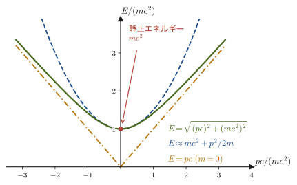
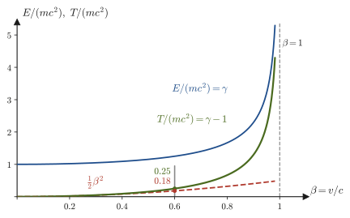
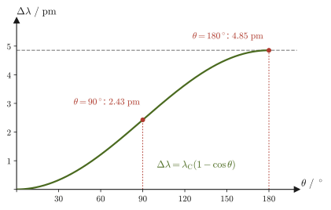

第57章4元ベクトルと相対論的力学 — E=mc² と粒子の運動学
$E=mc^2$ は，おそらく世界でいちばん有名な物理の式である．しかし高校物理では，「質量はエネルギーに変わる」という言葉として耳にすることはあっても，この式がどこから出てくるのかは習わない．第54章〜第56章で私たちは，ローレンツ変換・時間の遅れ・ミンコフスキー時空を学んだ．そこで変換されたのは「いつ，どこで」という位置と時刻だけだった．ところが高校物理には，ほかにも大切な量と法則がある——運動量 $m\bm{v}$，運動エネルギー $\tfrac12mv^2$，運動量保存則，エネルギー保存則．これらは，光速に比べて十分に遅い運動のためにガリレイ変換の下で作られた式であり，光速に近い運動にはそのままでは使えない．では，ローレンツ変換の下で「正しい形」に作り直すと，運動量とエネルギーはどうなるのだろうか．
この章の鍵は，時間と空間をひとまとめにして，$(ct,\,x,\,y,\,z)$ という 4 つの数の組（4元ベクトル）として扱うことである．3 次元のベクトルは，座標軸を回転しても「長さ」が変わらない．同じように 4 元ベクトルは，ローレンツ変換をしても変わらない「長さ」（不変量）をもつ．速度も，運動量とエネルギーも，それぞれ 4 元ベクトルにまとまる——運動量は 4 元ベクトルの空間成分，エネルギーは時間成分だったのである．この見方から，$E^2=(pc)^2+(mc^2)^2$ と $E=mc^2$ が，ほとんど一行の計算で出てくる．さらに，4 元運動量が保存するという 1 本の法則だけで，素粒子の崩壊（たとえば $\pi^+\to\mu^+\nu_\mu$），粒子どうしの衝突（反陽子をつくるには陽子をどれだけ加速すればよいか），光子と電子の衝突（コンプトン散乱）といった問題が，代数の計算として解けてしまう．
この章は，次の第58章（自然単位系と電磁気学の 4 元形式）や，相対論的量子力学・素粒子物理学へ進むための，実用的な道具箱にあたる．上付き・下付きの添字 $x^\mu$，$g_{\mu\nu}$，アインシュタイン（Einstein）の縮約記法といった新しい記号がたくさん出てくるが，読み方と使い方を具体的な数値の例とともにゆっくり説明するので，安心して読み進めてほしい．一度慣れると，式が短く，見通しがよくなる．
- 4元位置 $x^\mu=(ct,x,y,z)$，計量 $g_{\mu\nu}=\mathrm{diag}(1,-1,-1,-1)$，添字の上げ下げ，内積 $a\cdot b$，アインシュタインの縮約記法
- ローレンツ変換の行列 $\Lambda^\mu{}_\nu$ と，内積を変えない条件 $\Lambda^{\mathsf T}g\Lambda=g$，4元ベクトルの定義と内積のローレンツ不変性
- 4元速度 $u^\mu=\gamma(c,\bm{v})$（固有時で微分する理由）と不変量 $u\cdot u=c^2$
- 4元運動量 $p^\mu=(E/c,\bm{p})$，$E=\gamma mc^2$，$\bm{p}=\gamma m\bm{v}$，そして $E^2=(pc)^2+(mc^2)^2$（質量殻条件），質量ゼロの粒子の $E=pc$
- 静止エネルギー $mc^2$ と運動エネルギー $T=(\gamma-1)mc^2$（$v\ll c$ で $\tfrac12mv^2$），質量とエネルギーの等価性の意味
- 4元運動量の保存則，2体崩壊の運動学（$\pi^+\to\mu^+\nu_\mu$，$\pi^0\to\gamma\gamma$，電子・陽電子の対消滅），不変質量，しきいエネルギー（反陽子の生成），コンプトン散乱
関連するノート：望月泰英『物理学ノート 特殊相対性理論』 pp. 1–9．
57.1 4元位置ベクトルと添字の約束
まず，3 次元空間での回転を思い出そう（大学数学 第16章 16.4）．座標軸をぐるっと回すと，同じ点の座標 $(x,y,z)$ は変わるが，原点からの距離の 2 乗 $x^2+y^2+z^2$ は変わらない．第54章で導いたローレンツ変換にも，これに対応する「変わらない量」があった．出来事（ある時刻に，ある場所で起こること）の座標を S 系で $(t,x,y,z)$，S′ 系で $(t',x',y',z')$ とすると，
\begin{equation} c^2t^2-x^2-y^2-z^2=c^2t'^2-x'^2-y'^2-z'^2 \label{eq:57-invariant-s2} \end{equation}が成り立つ（第54章 54.5，第56章 56.4 の不変間隔 $s^2$）．回転で $x^2+y^2+z^2$ が変わらないことを使って 3 次元ベクトルを扱ったのと同じように，この不変量を使って「時空のベクトル」を扱おう，というのが本章の出発点である．そのために，時刻 $t$ に光速 $c$ をかけて長さの次元（$\mathrm{m}$）にそろえた量 $ct$ を 4 つ目の座標に加え，出来事の位置を 4 つの数の組で書く．
定義57.1 4元位置ベクトル
出来事の時刻 $t$ と位置 $(x,y,z)$ から作る 4 つの数の組
\begin{equation} \left(x^0,\,x^1,\,x^2,\,x^3\right)=\left(ct,\,x,\,y,\,z\right) \label{eq:57-4pos} \end{equation}を4元位置ベクトル（four-position）または単に 4元ベクトル $x^\mu$ という．添字 $\mu$（ミュー）は $0,1,2,3$ の値をとり，$x^0=ct$ を時間成分，$(x^1,x^2,x^3)=(x,y,z)$ を空間成分とよぶ．空間成分の 3 つの組を 3 次元ベクトル $\bm{x}$ と書き，$x^\mu=(ct,\bm{x})$ とも書く．4 つの成分はすべて長さの次元（$\mathrm{m}$）をもつ．
注意：右肩の数字は「乗」ではなく成分の番号
$x^\mu$ の右肩の $\mu$ は，累乗の指数ではなく成分の番号である．たとえば $x^2$ は「$x$ の 2 乗」ではなく「4 元位置の第 2 成分，つまり座標 $y$」を意味する．累乗を表したいときは，混同を避けるために $(x^1)^2$，$(x^0)^2$ のようにかっこをつける．ギリシャ文字の添字（$\mu,\nu,\rho,\sigma$．ミュー，ニュー，ロー，シグマと読む）は $0,1,2,3$ の全部を，ローマ字の添字（$i,j,k$）は空間成分の $1,2,3$ だけを走る，という使い分けが慣例である．また，$x^\mu$ という書き方は「4 つの成分のうち $\mu$ 番目」と「4 つの成分の組全体」の両方の意味で使われる（文脈で判断する）．
なぜ $t$ ではなく $ct$ を成分にするのかというと，$t$ の単位は秒，$x$ の単位はメートルで，そのままでは足したり引いたりできない（式 \eqref{eq:57-invariant-s2} の $c^2t^2$ と $x^2$ は，$c$ をかけて初めて同じ単位 $\mathrm{m^2}$ になる）からである．光は $1\ \mathrm{ns}$（$10^{-9}\ \mathrm{s}$）で約 $0.3\ \mathrm{m}$ 進むので，$1\ \mathrm{ns}$ という時間は $ct\approx0.3\ \mathrm{m}$ という長さに換算される．時間を「光が進む距離」で測るこの習慣は，時空図（第56章 56.3）で縦軸を $ct$ にしたことと同じである．
2 つの出来事 A，B の 4 元位置の差 $\Delta x^\mu=x_{\mathrm{B}}^\mu-x_{\mathrm{A}}^\mu=(c\Delta t,\Delta\bm{x})$ を4元変位（ごく近い 2 点なら $\dd x^\mu=(c\,\dd t,\dd\bm{x})$）とよぶ．これも 4 つの成分をもつ組で，4 元位置と同じ規則で変換される（57.3 節）．
例題57.1 4元位置の書き方
ある出来事が，S 系で時刻 $t=2.0\times10^{-8}\ \mathrm{s}$，位置 $(x,y,z)=(3.0,\,4.0,\,0)\ \mathrm{m}$ で起きた．この出来事の 4 元位置 $x^\mu$ を書け．ただし $c=3.00\times10^8\ \mathrm{m/s}$ とする．また，原点からの空間的な距離 $r=\abs{\bm{x}}$ と $ct$ を比べよ．
解答 時間成分は
$$ x^0=ct=\left(3.00\times10^8\ \mathrm{m/s}\right)\left(2.0\times10^{-8}\ \mathrm{s}\right)=6.0\ \mathrm{m} $$である（単位は $\mathrm{m/s}\cdot\mathrm{s}=\mathrm{m}$ で，長さになっている）．空間成分は $x^1=3.0\ \mathrm{m}$，$x^2=4.0\ \mathrm{m}$，$x^3=0$ なので，
$$ x^\mu=(6.0,\ 3.0,\ 4.0,\ 0)\ \mathrm{m} $$となる．原点からの距離は $r=\sqrt{(3.0)^2+(4.0)^2+0^2}\ \mathrm{m}=5.0\ \mathrm{m}$ で，$ct=6.0\ \mathrm{m}$ のほうが大きい．つまり，この出来事は，原点で $t=0$ に発した光が $t=2.0\times10^{-8}\ \mathrm{s}$ には $6.0\ \mathrm{m}$ 進んでいるはずの範囲に含まれている（$r\lt ct$）．$r\lt ct$ なので，原点から光より遅い速さ $r/t=5.0\ \mathrm{m}/(2.0\times10^{-8}\ \mathrm{s})=2.5\times10^{8}\ \mathrm{m/s}\ (\lt c)$ で進む物体でも，この出来事に到達できる．このとき 2 つの出来事は「時間的に離れている」という（時間的・空間的・光的の区別は，次節の内積で数値的に判定できる）．
57.2 計量と内積 — 添字の上げ下げとアインシュタインの縮約記法
3 次元のベクトル $\bm{a}=(a^1,a^2,a^3)$ と $\bm{b}=(b^1,b^2,b^3)$ の内積は，高校でも習ったとおり $\bm{a}\cdot\bm{b}=a^1b^1+a^2b^2+a^3b^3$ で，すべての項の符号が $+$ である（大学数学 第15章 15.2）．この内積は，座標軸を回転しても値が変わらない．時空では，式 \eqref{eq:57-invariant-s2} が示すように，「時間成分の 2 乗は $+$，空間成分の 2 乗は $-$」という符号の混ざった組み合わせが，ローレンツ変換で変わらない量になる．そこで，時空の 4 元ベクトルに対しては，符号が混ざった内積を定義する．この符号の割り当てを表にしたものが計量（metric）である．
定義57.2 計量と内積
計量（metric．計量テンソル）$g_{\mu\nu}$ は，$\mu,\nu=0,1,2,3$ に対する 16 個の数で，次の対角行列で与えられる（テンソルとは，添字を複数もつ量の総称である．ここでは $4\times4$ の数の表と思ってよい）：
\begin{equation} \left(g_{\mu\nu}\right)=\begin{pmatrix}1&0&0&0\\0&-1&0&0\\0&0&-1&0\\0&0&0&-1\end{pmatrix}=\mathrm{diag}(1,-1,-1,-1) \label{eq:57-metric} \end{equation}2 つの 4 元ベクトル $a^\mu$，$b^\mu$ の内積を，
\begin{equation} a\cdot b\;=\;\sum_{\mu=0}^{3}\sum_{\nu=0}^{3}g_{\mu\nu}\,a^\mu b^\nu\;=\;a^0b^0-a^1b^1-a^2b^2-a^3b^3\;=\;a^0b^0-\bm{a}\cdot\bm{b} \label{eq:57-dot} \end{equation}で定義する．最後の等号の $\bm{a}\cdot\bm{b}$（太字）は，空間成分だけの通常の 3 次元内積である．4 元ベクトルの内積は $a\cdot b$（細字），3 次元ベクトルの内積は $\bm{a}\cdot\bm{b}$（太字）と書き分ける．
式 \eqref{eq:57-metric} の 16 個の成分のうち，$0$ でないのは対角成分 $g_{00}=1$，$g_{11}=g_{22}=g_{33}=-1$ の 4 つだけである．式 \eqref{eq:57-dot} の 2 重の和は $4\times4=16$ 項あるが，$\mu\neq\nu$ の項は $g_{\mu\nu}=0$ で消え，$\mu=\nu$ の 4 項だけが残る．特に 4 元位置の自分自身との内積は，
\begin{equation} x\cdot x=\left(x^0\right)^2-\left(x^1\right)^2-\left(x^2\right)^2-\left(x^3\right)^2=c^2t^2-x^2-y^2-z^2 \label{eq:57-xx} \end{equation}となり，式 \eqref{eq:57-invariant-s2} の不変量 $s^2$（不変間隔の 2 乗）そのものである．つまり「ローレンツ変換で変わらない量 $=$ 4 元位置の内積 $x\cdot x$」と言い換えられた．この符号の混ざった計量の中身を図にまとめておく（図57.1）．
57.2.1 アインシュタインの縮約記法
式 \eqref{eq:57-dot} のように $\sum_{\mu=0}^3\sum_{\nu=0}^3$ を毎回書くのは面倒なので，相対論では和の記号を省略する約束を使う．これをアインシュタインの縮約記法（Einstein summation convention）という．
定義57.3 アインシュタインの縮約記法
- 1 つの項の中に，同じ文字の添字が上と下に 1 回ずつ現れたら，その添字について $0$ から $3$ まで和をとる（和の記号 $\sum$ は書かない）．このような添字をダミー添字（dummy index，縮約される添字）といい，文字は別の文字に付け替えてもよい：$a^\mu b_\mu=a^\nu b_\nu$．
- 1 つの項の中に 1 回だけ現れる添字を自由添字（free index）という．等式では，左辺と右辺，および足し合わされる各項で，同じ文字の自由添字が同じ位置（上か下か）に現れなければならない．
- 同じ文字の添字が，同じ項の中で上に 2 回，または下に 2 回現れることはない．
この約束を使うと，内積 \eqref{eq:57-dot} は $g_{\mu\nu}a^\mu b^\nu$ と書ける．$\mu$ と $\nu$ が式の中に上下 1 回ずつ現れているので，どちらもダミー添字であり，$\sum_\mu\sum_\nu$ を意味する．具体的に書き下しておこう．$g_{\mu\nu}$ は $\mu\neq\nu$ のとき $0$ なので，$4\times4=16$ 項のうち $\mu=\nu$ の 4 項だけが残り，
$$ g_{\mu\nu}a^\mu b^\nu=g_{00}a^0b^0+g_{11}a^1b^1+g_{22}a^2b^2+g_{33}a^3b^3=a^0b^0-a^1b^1-a^2b^2-a^3b^3 $$となって，式 \eqref{eq:57-dot} と一致する．自由添字の例は，次の添字の下げ方に現れる．
定義57.4 共変成分（添字の下げ方）と逆計量
4 元ベクトル $a^\mu$（上付き添字，反変成分）から，計量を使って下付き添字の成分 $a_\mu$（共変成分．反変・共変の違いは，ローレンツ変換で成分が $\Lambda$ で変わるか $\Lambda$ の逆で変わるかにある．57.3 節）を
\begin{equation} a_\mu=g_{\mu\nu}\,a^\nu \label{eq:57-lower} \end{equation}で定義する．右辺では $\nu$ がダミー添字（和をとる），$\mu$ は左右両辺に下付きで現れる自由添字である．計量が式 \eqref{eq:57-metric} なので，成分で書くと
$$ \left(a_0,\,a_1,\,a_2,\,a_3\right)=\left(a^0,\,-a^1,\,-a^2,\,-a^3\right) $$である（時間成分は同じ，空間成分は符号が逆になる）．逆に，下付きから上付きへ戻すには逆計量（inverse metric）$g^{\mu\nu}$（添字が上付きの計量）を使う：$a^\mu=g^{\mu\nu}a_\nu$．本書の計量では，$g^{\mu\nu}$ の数値は $g_{\mu\nu}$ と同じ $\mathrm{diag}(1,-1,-1,-1)$ で，$g^{\mu\rho}g_{\rho\nu}=\delta^\mu{}_\nu$ を満たす．ここで $\delta^\mu{}_\nu$ は，$\mu=\nu$ のとき $1$，$\mu\neq\nu$ のとき $0$ をとるクロネッカー（Kronecker）のデルタ（単位行列の成分）である．
なぜ 2 種類の成分を使い分けるのか，動機を先に述べておこう．次節で示すように，上付き成分はローレンツ変換 $\Lambda$ で，下付き成分は $\Lambda$ の逆で変換される．そのため，上下 1 対の縮約 $a^\mu b_\mu$ では変換の影響が打ち消し合って，値が変わらない量（不変量）になる．不変量が自動的に作れること，これが添字の上げ下げを導入する理由である．
共変成分を使うと，内積は 1 つの和で書ける：
\begin{equation} a\cdot b=a^\mu b_\mu=a_\mu b^\mu=a^0b_0+a^1b_1+a^2b_2+a^3b_3 \label{eq:57-dot-contract} \end{equation}実際，$b_\mu=g_{\mu\nu}b^\nu$ を代入すると $a^\mu b_\mu=g_{\mu\nu}a^\mu b^\nu$ で，式 \eqref{eq:57-dot} と同じである．上付きと下付きを1 対にして和をとることを縮約（contraction）という．縮約でできた量（添字が 1 つも残らない量）は，次節で示すように，ローレンツ変換で値が変わらない．
イメージ：行列で書くと
4 元ベクトルを縦ベクトル $a=(a^0,a^1,a^2,a^3)^{\mathsf T}$（$\mathsf T$ は転置），計量を式 \eqref{eq:57-metric} の $4\times4$ 行列 $g$ として，内積は $a\cdot b=a^{\mathsf T}g\,b$ と書ける（行列と行列式は大学数学 第8章 8.1）．$g\,b$ が共変成分の縦ベクトル $(b_0,b_1,b_2,b_3)^{\mathsf T}$ で，それと $a$ の成分どうしをかけて足したものが $a^\mu b_\mu$ である．3 次元の通常の内積は $\bm{a}^{\mathsf T}I\bm{b}$（$I$ は単位行列）だったから，時空の内積は「単位行列の代わりに $g$ をはさんだ内積」と見ることができる．なお，$g=\mathrm{diag}(1,-1,-1,-1)$ は対角行列（対角成分以外がすべて $0$ の行列）で，対角成分の符号 $(+,-,-,-)$ が時空の性質を決めている（対角行列と固有値については大学数学 第12章 12.3）．
注意：計量の符号の規約は 2 通りある
本書は，姉妹編「素粒子物理学（AD 08）」と同じく $g_{\mu\nu}=\mathrm{diag}(1,-1,-1,-1)$（時間成分が $+$，空間成分が $-$）を使う．これを $(+,-,-,-)$ の規約という．素粒子物理・場の理論の教科書に多い規約である．一方，一般相対性理論の教科書などでは，符号を全部逆にした $\mathrm{diag}(-1,1,1,1)$，すなわち $(-,+,+,+)$ の規約がよく使われる．どちらを使っても物理は同じだが，$x\cdot x$ や $p\cdot p$ の符号が逆になるので，別の本を読むときは最初にどちらの規約かを確かめよう．なお，平坦な時空（本書で扱う特殊相対論の時空）の計量を $\eta_{\mu\nu}$ と書く本も多い．
考察：内積の値が負になったり 0 になったりしてよいのか
3 次元ベクトルの $\bm{a}\cdot\bm{a}$ は $0$ 以上で，$0$ になるのは $\bm{a}=\bm{0}$ のときだけである．ところが $a\cdot a=(a^0)^2-\abs{\bm{a}}^2$ は，$\abs{a^0}\gt\abs{\bm{a}}$ なら正，$\abs{a^0}\lt\abs{\bm{a}}$ なら負，$\abs{a^0}=\abs{\bm{a}}$ なら，$a^\mu\neq0$ でも $a\cdot a=0$ になる．これは矛盾ではなく，時空の内積が「長さの 2 乗」ではなく不変量を作る規則だからである（大学数学 第15章 15.2 の内積を，符号の混ざった形へ一般化したものと見る）．$x\cdot x\gt0$ の 2 つの出来事の関係を時間的，$x\cdot x\lt0$ を空間的，$x\cdot x=0$ を光的とよぶ（第56章 56.4）．光が原点から進んで到達する出来事は $x\cdot x=0$ である．
例題57.2 時空間隔 $x\cdot x$ の計算と分類
原点の出来事 O から見た，次の 3 つの出来事 (a)〜(c) の 4 元位置（単位はいずれも $\mathrm{m}$）について，$x\cdot x$ を計算し，時間的・空間的・光的のどれか答えよ．(a) $(ct,x,y,z)=(5,3,0,0)$，(b) $(3,5,0,0)$，(c) $(5,3,4,0)$．
解答 式 \eqref{eq:57-xx} $x\cdot x=(x^0)^2-(x^1)^2-(x^2)^2-(x^3)^2$ に代入する．
$$ \begin{aligned} \text{(a)}\quad x\cdot x&=5^2-3^2-0^2-0^2=25-9=16\ \mathrm{m^2}\gt0\quad\text{（時間的）}\\ \text{(b)}\quad x\cdot x&=3^2-5^2-0^2-0^2=9-25=-16\ \mathrm{m^2}\lt0\quad\text{（空間的）}\\ \text{(c)}\quad x\cdot x&=5^2-3^2-4^2-0^2=25-9-16=0\ \mathrm{m^2}\quad\text{（光的）} \end{aligned} $$(a) と (b) は，成分を入れかえただけなのに符号が逆になる．時間成分と空間成分は同じ立場ではなく，計量が両者に別の符号を与えている．(c) は，原点から距離 $\sqrt{3^2+4^2}=5\ \mathrm{m}$ だけ離れた点で，光が $5\ \mathrm{m}$ 進む時間 $ct=5\ \mathrm{m}$ にちょうど当たるので，光的である．(a) の $x\cdot x=16\ \mathrm{m^2}$ は，この出来事が原点から見て時間的に離れていて，これらを同じ場所で起きた 2 つの出来事に見える慣性系が存在する，という意味をもつ（次節の例題57.4で，その系での時間間隔が $\sqrt{16}\ \mathrm{m}/c=4\ \mathrm{m}/c$ であることを確かめる）．
例題57.3 共変成分と内積（縮約）の計算
4 元ベクトル $a^\mu=(3,1,2,0)$，$b^\mu=(2,1,0,1)$ について，共変成分 $a_\mu$，$b_\mu$ を求め，$a\cdot b$，$a\cdot a$，$b\cdot b$ を 2 通り（$a^\mu b_\mu$ と $a^0b^0-\bm{a}\cdot\bm{b}$）で計算せよ．
解答 式 \eqref{eq:57-lower} より空間成分の符号を逆にして，$a_\mu=(3,-1,-2,0)$，$b_\mu=(2,-1,0,-1)$ である．縮約 \eqref{eq:57-dot-contract} は
$$ a\cdot b=a^\mu b_\mu=3\times2+1\times(-1)+2\times0+0\times(-1)=6-1+0+0=5 $$もう一方の書き方 $a^0b^0-\bm{a}\cdot\bm{b}$ では，$\bm{a}=(1,2,0)$，$\bm{b}=(1,0,1)$ の 3 次元内積が $1\times1+2\times0+0\times1=1$ なので，$a\cdot b=3\times2-1=5$ となって一致する．同様に，
$$ a\cdot a=3^2-\left(1^2+2^2+0^2\right)=9-5=4,\qquad b\cdot b=2^2-\left(1^2+0^2+1^2\right)=4-2=2 $$である（$a\cdot a\gt0$ なので $a$ は時間的なベクトル）．
57.3 ローレンツ変換 $\Lambda^\mu{}_\nu$ と 4元ベクトル
第54章の 54.7 節で，S 系に対して $x$ 軸の正の向きに速さ $v$ で動く S′ 系への変換を，行列で書いた．4 元位置 $x^\mu=(ct,x,y,z)$ の記法では，これは
\begin{equation} x'^\mu=\Lambda^\mu{}_\nu\,x^\nu \label{eq:57-lorentz} \end{equation}と書ける．右辺は縮約記法で，$\nu$ についての和（$\nu=0,1,2,3$）を表す．$\Lambda^\mu{}_\nu$（ラムダ，ミュー，ニュー）は，第54章 54.7.1 節の $4\times4$ 行列と同じもの（の成分を添字つきで書いたもの）で，上付きの添字 $\mu$ が行の番号，下付きの添字 $\nu$ が列の番号を表す．$x$ 方向のブースト（速度 $\beta=v/c$ の変換）では，
\begin{equation} \left(\Lambda^\mu{}_\nu\right)=\begin{pmatrix}\gamma&-\beta\gamma&0&0\\-\beta\gamma&\gamma&0&0\\0&0&1&0\\0&0&0&1\end{pmatrix},\qquad\beta=\frac vc,\quad\gamma=\frac{1}{\sqrt{1-\beta^2}} \label{eq:57-Lambda} \end{equation}である．たとえば $\mu=0$ の成分は，和を書き下すと $x'^0=\Lambda^0{}_0x^0+\Lambda^0{}_1x^1+\Lambda^0{}_2x^2+\Lambda^0{}_3x^3=\gamma x^0-\beta\gamma x^1$，すなわち $ct'=\gamma(ct-\beta x)$ で，第54章のローレンツ変換 $t'=\gamma(t-vx/c^2)$ の両辺に $c$ をかけたものと一致する．$\mu=1$ の成分は $x'^1=-\beta\gamma x^0+\gamma x^1$，すなわち $x'=\gamma(x-vt)$ である．
57.3.1 ローレンツ変換は内積を変えない
3 次元の回転行列 $R$ は，$R^{\mathsf T}R=I$ を満たす．この条件は「回転の後でも長さ $\abs{\bm{r}}$（内積）が変わらない」ことと同じである．ローレンツ変換にも同じ性質がある．
導出：$\Lambda^{\mathsf T}g\Lambda=g$ を（$2\times2$ の場合に）成分で確かめる
運動の向きと垂直な成分 $x^2,x^3$ は変わらないので，$(x^0,x^1)$ の $2\times2$ の部分だけ調べれば十分である．ブースト \eqref{eq:57-Lambda} の $2\times2$ の部分を $\Lambda=\begin{pmatrix}\gamma&-\beta\gamma\\-\beta\gamma&\gamma\end{pmatrix}$，計量の対応する部分を $g=\begin{pmatrix}1&0\\0&-1\end{pmatrix}$ とする．まず $g\Lambda$ を作る（$g$ は第 2 行の符号を逆にする）：
$$ g\Lambda=\begin{pmatrix}1&0\\0&-1\end{pmatrix}\begin{pmatrix}\gamma&-\beta\gamma\\-\beta\gamma&\gamma\end{pmatrix}=\begin{pmatrix}\gamma&-\beta\gamma\\\beta\gamma&-\gamma\end{pmatrix} $$次に，$\Lambda$ の転置（$\Lambda$ は対称行列なので $\Lambda^{\mathsf T}=\Lambda$）を左からかける：
$$ \Lambda^{\mathsf T}g\Lambda=\begin{pmatrix}\gamma&-\beta\gamma\\-\beta\gamma&\gamma\end{pmatrix}\begin{pmatrix}\gamma&-\beta\gamma\\\beta\gamma&-\gamma\end{pmatrix} =\begin{pmatrix}\gamma^2-\beta^2\gamma^2&-\beta\gamma^2+\beta\gamma^2\\-\beta\gamma^2+\beta\gamma^2&\beta^2\gamma^2-\gamma^2\end{pmatrix} =\begin{pmatrix}\gamma^2(1-\beta^2)&0\\0&-\gamma^2(1-\beta^2)\end{pmatrix} $$$\gamma^2(1-\beta^2)=1$ なので，これは $\begin{pmatrix}1&0\\0&-1\end{pmatrix}=g$ に等しい．よって
\begin{equation} \Lambda^{\mathsf T}g\,\Lambda=g\qquad\text{すなわち}\qquad g_{\mu\nu}\,\Lambda^\mu{}_\rho\,\Lambda^\nu{}_\sigma=g_{\rho\sigma} \label{eq:57-LgL} \end{equation}が成り立つ．右の成分の式は，行列の積を成分で書いたものである（$(\Lambda^{\mathsf T}g\Lambda)_{\rho\sigma}=\sum_{\mu,\nu}\Lambda^\mu{}_\rho\,g_{\mu\nu}\,\Lambda^\nu{}_\sigma$）．
（導出終わり）
この性質から，ローレンツ変換を，「4 元ベクトルの内積 \eqref{eq:57-dot} を変えない線形変換」と特徴づけることができる（回転が「3 次元の内積を変えない線形変換」であるのと同じ）．次に，4 元ベクトルを一般に定義しよう．
定義57.5 4元ベクトル
4 つの量の組 $a^\mu=(a^0,a^1,a^2,a^3)$ で，慣性系を S から S′ に変えたとき，4 元位置と同じ規則
\begin{equation} a'^\mu=\Lambda^\mu{}_\nu\,a^\nu \label{eq:57-4vec} \end{equation}で変換されるものを4元ベクトル（反変ベクトル）という．空間の回転に対しては，空間成分 $(a^1,a^2,a^3)$ が通常の 3 次元ベクトルとして回転し，時間成分 $a^0$ は変わらないものとする．
数学的には，4 成分の実数の組の全体は 4 次元の線形空間（大学数学 第10章 10.3）をなし，$\Lambda$ はこの空間の線形変換（第11章 11.4 の表現行列）である．4 元位置 $x^\mu$ や 4 元変位 $\dd x^\mu$ は，定義から 4 元ベクトルである（$\Lambda^\mu{}_\nu$ は定数なので，$x'^\mu=\Lambda^\mu{}_\nu x^\nu$ の差や微小量も同じ規則で変換される）．4 つの数を並べただけでは，4 元ベクトルとは限らない（次節で，$(c,\bm{v})$ が 4 元ベクトルにならない例を見る）．
定理57.1 4元ベクトルの内積のローレンツ不変性
$a^\mu$，$b^\mu$ が 4 元ベクトルなら，どの慣性系で計算しても内積は同じ値になる：
\begin{equation} a'\cdot b'=a\cdot b \label{eq:57-invariance} \end{equation}ここで $a'\cdot b'=g_{\mu\nu}a'^\mu b'^\nu$ は，S′ 系での成分 $a'^\mu$，$b'^\nu$ で計算した内積である．
証明
$a'^\mu=\Lambda^\mu{}_\rho a^\rho$，$b'^\nu=\Lambda^\nu{}_\sigma b^\sigma$ を $g_{\mu\nu}a'^\mu b'^\nu$ に代入すると（添字 $\rho,\sigma$ は，ダミー添字として新たに使う），
$$ a'\cdot b'=g_{\mu\nu}\left(\Lambda^\mu{}_\rho a^\rho\right)\left(\Lambda^\nu{}_\sigma b^\sigma\right)=\left(g_{\mu\nu}\Lambda^\mu{}_\rho\Lambda^\nu{}_\sigma\right)a^\rho b^\sigma=g_{\rho\sigma}a^\rho b^\sigma=a\cdot b $$3 番目の等号で式 \eqref{eq:57-LgL} $g_{\mu\nu}\Lambda^\mu{}_\rho\Lambda^\nu{}_\sigma=g_{\rho\sigma}$ を使った．こうして式 \eqref{eq:57-invariance} が示された．（$\Lambda$ の成分は数なので，かける順番を入れかえてよい．）
（証明終わり）
特に $a=b=x$ とおくと，$x'\cdot x'=x\cdot x$，つまり式 \eqref{eq:57-invariant-s2} が，計算を新たに行わずに導かれる．座標の差 $\dd x^\mu$ について $\dd x\cdot\dd x=c^2\dd t^2-\dd\bm{x}^2$ が不変であることは，第56章の不変間隔 $\dd s^2$ にあたる．このように，添字がすべて縮約されて（自由添字が残らずに）1 つの数になる量をローレンツ・スカラー（ローレンツ不変量）という．
数学の道具：下付き成分はどう変換されるか
共変成分 $a_\mu=g_{\mu\nu}a^\nu$ は，上付き成分と違う変換をする．実際に $x$ 方向のブーストで確かめよう．$a^0=a_0$，$a^1=-a_1$ なので，$a'^0=\gamma(a^0-\beta a^1)$，$a'^1=\gamma(a^1-\beta a^0)$ から，
$$ a'_0=a'^0=\gamma\left(a_0+\beta a_1\right),\qquad a'_1=-a'^1=\gamma\left(a_1+\beta a_0\right) $$となる．上付き成分では $-\beta$ だったところが，下付き成分では $+\beta$ になっている（逆向きのブースト $\Lambda(-\beta)$ と同じ形）．一般には $a'_\mu=(\Lambda^{-1})^\nu{}_\mu\,a_\nu$ である．$a^\mu b_\mu$ のような上下 1 対の縮約が不変なのは，上付き成分が $\Lambda$ で，下付き成分が $\Lambda^{-1}$ で変換され，たがいに打ち消し合うからだ，と理解できる．
数学の道具：運動の向きが $x$ 軸でないとき
S′ が S に対して任意の向き $\bm{n}=\bm{v}/v$ に速さ $v$ で動いているときは，4 元ベクトル $a^\mu=(a^0,\bm{a})$ を，$\bm{n}$ に平行な成分 $a_\parallel=\bm{a}\cdot\bm{n}$ と垂直な成分 $\bm{a}_\perp=\bm{a}-a_\parallel\bm{n}$ に分ける．平行成分は $x$ 方向のブーストと同じ形，垂直成分は変わらない：
$$ a'^0=\gamma\left(a^0-\beta a_\parallel\right),\qquad a'_\parallel=\gamma\left(a_\parallel-\beta a^0\right),\qquad\bm{a}'_\perp=\bm{a}_\perp $$である．本章の例題では，たいてい運動の向きを $x$ 軸に選んで式 \eqref{eq:57-Lambda} を使う．
例題57.4 $\beta=0.6$ のブーストと不変性の確認
$\beta=0.6$ のローレンツ変換について，(a) $\gamma$ と $\Lambda$ を求め，$\Lambda^{\mathsf T}g\Lambda=g$（$2\times2$ の部分）を数値で確かめよ．(b) 例題57.2 (a) の出来事 $x^\mu=(5,3,0,0)\ \mathrm{m}$ の S′ 系での 4 元位置 $x'^\mu$ を求め，$x'\cdot x'$ を計算せよ．
解答 (a) $\gamma=1/\sqrt{1-0.6^2}=1/\sqrt{0.64}=1/0.8=5/4$，$\beta\gamma=0.6\times5/4=3/4$ なので，
$$ \Lambda=\begin{pmatrix}5/4&-3/4\\-3/4&5/4\end{pmatrix},\qquad g\Lambda=\begin{pmatrix}5/4&-3/4\\3/4&-5/4\end{pmatrix} $$ $$ \Lambda^{\mathsf T}g\Lambda=\begin{pmatrix}5/4&-3/4\\-3/4&5/4\end{pmatrix}\begin{pmatrix}5/4&-3/4\\3/4&-5/4\end{pmatrix}=\begin{pmatrix}\frac{25}{16}-\frac{9}{16}&-\frac{15}{16}+\frac{15}{16}\\-\frac{15}{16}+\frac{15}{16}&\frac{9}{16}-\frac{25}{16}\end{pmatrix}=\begin{pmatrix}1&0\\0&-1\end{pmatrix}=g $$(b) 式 \eqref{eq:57-lorentz} より，
$$ x'^0=\gamma\left(x^0-\beta x^1\right)=\frac54\left(5-0.6\times3\right)=\frac54\times3.2=4\ \mathrm{m},\qquad x'^1=\gamma\left(x^1-\beta x^0\right)=\frac54\left(3-0.6\times5\right)=0 $$$x'^2=x'^3=0$ のままなので，$x'^\mu=(4,0,0,0)\ \mathrm{m}$ である．内積は $x'\cdot x'=4^2-0=16\ \mathrm{m^2}$ で，S 系での値 $5^2-3^2=16\ \mathrm{m^2}$ と一致する（定理57.1）．S′ 系では，この出来事は原点と同じ場所（$x'=0$）で，時間 $ct'=4\ \mathrm{m}$ だけ後に起きている．つまり，S′ 系は，原点の出来事とこの出来事が同じ場所で起きる慣性系であり，その系での時間間隔 $\Delta t'=4\ \mathrm{m}/c$ が固有時である（例題57.2 の予告どおり）．
57.4 4元速度
高校物理の速度は，位置を時間で微分した $\bm{v}=\dd\bm{x}/\dd t$ だった．これを 4 元ベクトルに拡張したい．4 元位置 $x^\mu$ を時間で微分して，$(\dd x^0/\dd t,\ \dd x^i/\dd t)=(c,\ \bm{v})$ を作るのが，最初に思いつく方法である．しかし，これは4元ベクトルにならない．確かめてみよう．S 系で静止している粒子を考える．この粒子では $(c,\bm{v})=(c,0,0,0)$ である．S′ 系（$\beta=0.6$，$\gamma=5/4$）から見ると，粒子は速度 $-0.6c$ で動くから，S′ 系で同じ方法で作った量は $(c,-0.6c,0,0)$ である．一方，$(c,0,0,0)$ が 4 元ベクトルなら，式 \eqref{eq:57-4vec} により S′ 系の成分は $\Lambda(c,0,0,0)^{\mathsf T}=(\gamma c,-\beta\gamma c,0,0)=(1.25c,-0.75c,0,0)$ になるはずだが，$(c,-0.6c,0,0)$ とは合わない（すべての成分が $\gamma=1.25$ 倍だけ違う）．
原因は，微分する変数 $t$ にある．$\dd x^\mu$ は 4 元ベクトルだが，$\dd t$ は観測者（慣性系）ごとに違う値をとる（時間の遅れ．第55章 55.2）．4 元ベクトルを「すべての慣性系で同じ値をとる量」で割れば，4 元ベクトルのまま残る．そこで，粒子と一緒に動く時計が刻む時間，すなわち固有時（proper time）$\tau$（タウ）で微分する．
固有時 $\tau$ は，第56章 56.5 節で定義したもの（$\dd\tau=\dd s/c$）である．ここでは，4 元ベクトルの内積を使って，世界線に沿った微小な固有時 $\dd\tau$ を
\begin{equation} c^2\dd\tau^2=\dd x\cdot\dd x=c^2\dd t^2-\dd\bm{x}^2 \label{eq:57-proper-time} \end{equation}と書き直しておく（式 \eqref{eq:57-xx} の $\dd s^2=\dd x\cdot\dd x$）．$\dd\tau^2$ は 4 元ベクトルの内積で書かれているから，定理57.1 により，どの慣性系で計算しても同じ値になる（ローレンツ・スカラー）．
粒子の速さを $v=\abs{\bm{v}}=\abs{\dd\bm{x}/\dd t}$ とすると，$\dd\bm{x}^2=v^2\dd t^2$ なので，式 \eqref{eq:57-proper-time} は $c^2\dd\tau^2=c^2\dd t^2(1-v^2/c^2)$ となり，
\begin{equation} \dd\tau=\frac{\dd t}{\gamma},\qquad\gamma=\frac{1}{\sqrt{1-v^2/c^2}} \label{eq:57-dtau} \end{equation}を得る．ここで，$\gamma$ は粒子の速さ $v$ で決まるローレンツ因子である（前節までの $\gamma$ は，座標系どうしの相対速度で決まる因子だったが，式の形は同じである）．これは，第55章の時間の遅れ「動いている時計は $1/\gamma$ だけゆっくり進む」にほかならない．
定義57.6 4元速度
粒子の 4 元位置を固有時で微分したもの
\begin{equation} u^\mu=\diff{x^\mu}{\tau} \label{eq:57-u-def} \end{equation}を4元速度（four-velocity）という．単位は $\mathrm{m/s}$ である．$\dd x^\mu$ が 4 元ベクトルで $\dd\tau$ がローレンツ不変なので，$u^\mu$ は 4 元ベクトルである．
導出：$u^\mu=\gamma(c,\bm{v})$
連鎖律により，$\dd/\dd\tau=(\dd t/\dd\tau)\,\dd/\dd t$ で，式 \eqref{eq:57-dtau} から $\dd t/\dd\tau=\gamma$ である．時間成分は $x^0=ct$ なので，
$$ u^0=\diff{(ct)}{\tau}=c\diff{t}{\tau}=\gamma c $$空間成分は，$x^i$（$i=1,2,3$）を $t$ の関数として，$\dd x^i/\dd t=v^i$（通常の速度の成分）だから，
$$ u^i=\diff{x^i}{\tau}=\diff{t}{\tau}\diff{x^i}{t}=\gamma\,v^i $$である．まとめて，
\begin{equation} u^\mu=\gamma\left(c,\ \bm{v}\right)=\left(\gamma c,\ \gamma v^1,\ \gamma v^2,\ \gamma v^3\right) \label{eq:57-u} \end{equation}（導出終わり）
この式を，前に作ってみた $(c,\bm{v})$ と比べると，全体に $\gamma$ がかかっただけの違いである．$v\ll c$ では $\gamma\approx1$ なので，$u^\mu\approx(c,\bm{v})$，つまり空間成分は高校物理の速度になる．また，静止した質点では $\bm{v}=\bm{0}$，$\gamma=1$ なので，
$$ u^\mu=(c,\,0,\,0,\,0) $$である．静止していても時間方向に「速さ $c$ で進んでいる」（固有時が進んでいる）と読める．
定理57.2 4元速度の不変量
どんな運動をする質点でも，4 元速度の内積は速さによらず一定値をとる：
\begin{equation} u\cdot u=c^2 \label{eq:57-uu} \end{equation}証明（2 通り）
(i) 成分計算：式 \eqref{eq:57-u} を内積の定義 \eqref{eq:57-dot} に入れて，
$$ u\cdot u=(\gamma c)^2-\gamma^2\bm{v}^2=\gamma^2\left(c^2-v^2\right)=\frac{c^2\left(1-v^2/c^2\right)}{1-v^2/c^2}=c^2 $$（$\gamma^2=1/(1-v^2/c^2)$ を使った．単位は $\mathrm{(m/s)^2}$ で，速さの 2 乗の単位に合っている．）
(ii) 定義から：式 \eqref{eq:57-proper-time} の両辺を $\dd\tau^2$ で割ると，$\dd x\cdot\dd x/\dd\tau^2=c^2$ となる．左辺は $(\dd x^\mu/\dd\tau)(\dd x_\mu/\dd\tau)=u\cdot u$ である．
（証明終わり）
(ii) からわかるように，$u\cdot u=c^2$ は，固有時の定義 \eqref{eq:57-proper-time} を言い換えたにすぎない．また $u\cdot u$ はローレンツ・スカラーなので，静止系（$u^\mu=(c,0,0,0)$）で $c^2$ になることがわかれば，どの慣性系でも $c^2$ である．4 つの成分 $u^0,u^1,u^2,u^3$ は独立ではなく，$(u^0)^2=c^2+\abs{\bm{u}}^2$ という関係で結ばれている．独立なのは，通常の速度 $\bm{v}$ の 3 成分だけである．
イメージ：なぜ「固有時で微分」するのか
世界線は，粒子が時空で描く 1 本の曲線である．曲線上の位置は，粒子と一緒に動く時計が示す時間 $\tau$ で目盛りをつけられる．しかも，どの慣性系の観測者もこの目盛りに異議を唱えない（$\tau$ は不変量だから）．一方，$t$ は観測者ごとに違うので，「$t$ あたりの位置の変化」は観測者ごとに別の量に見える．図57.2 の矢印 $u^\mu$ は，世界線の接ベクトルであり，どの観測者もこれが「同じ向き」を指すと認める．観測者が違うと，時間軸と空間軸の傾きが変わって，矢印の成分 $(u^0,u^1)$ の値だけが変わる（ローレンツ変換）．
例題57.5 $v=0.6c$ で動く粒子の 4 元速度
$v=0.6c$ で $x$ 方向に動く粒子について，$\gamma$，4 元速度 $u^\mu$ の各成分，$u\cdot u$，および粒子の固有時 $1.0\ \mathrm{s}$ の間に，S 系で経過する時間を求めよ．$c=3.00\times10^8\ \mathrm{m/s}$ とする．
解答 $\gamma=1/\sqrt{1-0.6^2}=1/0.8=1.25$．式 \eqref{eq:57-u} より，
$$ u^0=\gamma c=1.25c=3.75\times10^8\ \mathrm{m/s},\qquad u^1=\gamma v=1.25\times0.6c=0.75c=2.25\times10^8\ \mathrm{m/s},\qquad u^2=u^3=0 $$内積は $u\cdot u=(1.25c)^2-(0.75c)^2=(1.5625-0.5625)c^2=c^2$ となり，式 \eqref{eq:57-uu} が成り立つ．固有時 $\Delta\tau=1.0\ \mathrm{s}$ の間に，S 系の時間は $\Delta t=\gamma\,\Delta\tau=1.25\ \mathrm{s}$ 経過する（$u^0/c=\dd t/\dd\tau=\gamma$）．
例題57.6 4元速度から速度の合成則を導く
S 系で，粒子が $x$ 方向に速さ $u_x=0.8c$ で動いている．S 系に対して $x$ 方向に速さ $v=0.6c$ で動く S′ 系から見た，この粒子の速さ $u'_x$ を，4 元速度の変換を使って求めよ（3 次元の速度は，第56章と同じく，座標系の速さを $v$，粒子の速度を $u_x,u'_x$ と書く．4 元速度 $u^\mu$ とは別のものである）．
解答 S 系での粒子の 4 元速度は，$\gamma=1/\sqrt{1-0.8^2}=1/0.6=5/3$ より $u^\mu=(5c/3,\ 4c/3,\ 0,\ 0)$ である（$\gamma v=(5/3)\times0.8c=4c/3$）．S′ 系への変換は，$\gamma_{\mathrm{S'}}=5/4$，$\beta_{\mathrm{S'}}\gamma_{\mathrm{S'}}=3/4$ の式 \eqref{eq:57-Lambda} で，
$$ u'^0=\frac54\cdot\frac53c-\frac34\cdot\frac43c=\frac{25}{12}c-c=\frac{13}{12}c,\qquad u'^1=-\frac34\cdot\frac53c+\frac54\cdot\frac43c=-\frac54c+\frac53c=\frac{5}{12}c $$である．$u'^1/u'^0=u'_x/c$（式 \eqref{eq:57-u} の $\gamma v/(\gamma c)$）なので，$u'_x=\dfrac{5/12}{13/12}c=\dfrac{5}{13}c\approx0.385c$ である．第56章 56.1 節の速度の変換則 $u'_x=(u_x-v)/(1-vu_x/c^2)$ に $u_x=0.8c$，$v=0.6c$ を入れると $0.2c/(1-0.48)=0.385c$ となって一致する．確認として $u'\cdot u'=(13/12)^2c^2-(5/12)^2c^2=(169-25)c^2/144=c^2$ である．4 元速度を変換するだけで，速度の合成則が「$u^1/u^0$ の比」として自動的に出てくる．
数学の道具：ラピディティで見る $\Lambda$ と $u^\mu$（第56章 56.7）
第56章で導入したラピディティ $\phi$（$\tanh\phi=\beta$，$\gamma=\cosh\phi$，$\gamma\beta=\sinh\phi$）を使うと，ブースト \eqref{eq:57-Lambda} の $2\times2$ の部分は， $$ \Lambda=\begin{pmatrix}\cosh\phi&-\sinh\phi\\-\sinh\phi&\cosh\phi\end{pmatrix} $$ と書ける．$x$ 方向に速さ $v=c\tanh\phi$ で動く粒子の 4 元速度 \eqref{eq:57-u} は $u^\mu=\gamma(c,v,0,0)=c\,(\cosh\phi,\ \sinh\phi,\ 0,\ 0)$ となり，$u\cdot u=c^2(\cosh^2\phi-\sinh^2\phi)=c^2$ である．これは定理57.2 の別証明になっている．
この粒子（ラピディティ $\phi$）を，ラピディティ $\phi_V$ のブースト $\Lambda(\phi_V)$ で S′ 系に移すと，加法定理 $\cosh\phi\cosh\phi_V-\sinh\phi\sinh\phi_V=\cosh(\phi-\phi_V)$，$\cosh\phi_V\sinh\phi-\sinh\phi_V\cosh\phi=\sinh(\phi-\phi_V)$ により $u'^\mu=c\,(\cosh(\phi-\phi_V),\ \sinh(\phi-\phi_V),0,0)$ となる．つまり，ラピディティは単に引き算される．例題57.6 では，$\phi=\tanh^{-1}0.8=\ln3$，$\phi_V=\tanh^{-1}0.6=\ln2$ なので $\phi'=\ln3-\ln2=\ln\tfrac32$，$u'_x=c\tanh\phi'=c\,\dfrac{3/2-2/3}{3/2+2/3}=\dfrac{5}{13}c$ となって，先の結果と一致する．
例題57.7 光子にはなぜ静止系がないのか
光子（質量 0，速さ $c$）に，4 元速度 $u^\mu=\gamma(c,\bm{v})$ を適用しようとすると，何が起きるか．これは「光子には静止系がない」という事実とどう対応するか．
解答 光子は $v=c$ で動くので，$\gamma=1/\sqrt{1-v^2/c^2}$ の分母が $0$ になり，$u^\mu=\gamma(c,\bm{v})$ は定まらない．原因は固有時にある．光子の世界線では $\dd s^2=c^2\dd t^2-\dd\bm{x}^2=0$ なので，式 \eqref{eq:57-proper-time} から $\dd\tau=0$，つまり光子に付き添う時計は時間を刻まず，$\tau$ を目盛りとして使えない（$u^\mu=\dd x^\mu/\dd\tau$ は $0$ で割ることになる）．もう 1 つの見方をしよう．もし光子が静止して見える慣性系があれば，その系での 4 元速度は $(c,0,0,0)$ で，$u\cdot u=c^2\gt0$ でなければならない．ところが光子の世界線では $\dd x\cdot\dd x=0$ で，これは定理57.1 によりどの慣性系でも $0$ のままである．矛盾するので，光子が静止して見える慣性系は存在しない．これが「光子には静止系がない」ことの数学的な表現である．だから，光子の運動を記述するには，4 元速度ではなく，次節の 4 元運動量（質量 $m\to0$ と $\gamma\to\infty$ の積が有限にとどまる量）が必要になる．
57.5 4元運動量と $E^2=(pc)^2+(mc^2)^2$
高校物理（と第2章）の運動量 $\bm{p}=m\bm{v}$ は，ニュートン力学では保存する量だった．しかし，慣性系を変えたときの速度の変換則が，ガリレイ変換の $\bm{v}'=\bm{v}-\bm{V}$ から，ローレンツ変換の速度の合成則（例題57.6）に変わると，「衝突の前後で $m\bm{v}$ の合計が変わらない」という関係は，ある慣性系で成り立っても別の慣性系では成り立たなくなってしまう．運動量の保存則を，すべての慣性系で同時に成り立つ法則として救うには，運動量を「ローレンツ変換で 4 元ベクトルとして変換される量の一部」として作り直せばよい．前節の 4 元速度 $u^\mu$ に，粒子の性質を表す不変な量——静止質量 $m$——をかければ，自然に 4 元ベクトルが得られる．
定義57.7 4元運動量
質量 $m$ の粒子の4元運動量（four-momentum）を
\begin{equation} p^\mu=m\,u^\mu=\left(\gamma mc,\ \gamma m\bm{v}\right) \label{eq:57-p-def} \end{equation}で定義する．ここで $m$ は，粒子と一緒に動く観測者（静止系）で測った質量，つまり静止質量（rest mass）で，粒子ごとの定数であり，慣性系によらない．$\gamma=1/\sqrt{1-v^2/c^2}$ は粒子の速さ $v$ で決まる因子である．時間成分を $p^0=E/c$，空間成分を $\bm{p}$ と書き，
\begin{equation} p^\mu=\left(\frac{E}{c},\ \bm{p}\right),\qquad E=\gamma mc^2,\qquad\bm{p}=\gamma m\bm{v} \label{eq:57-p} \end{equation}とする．$E$ を全エネルギー（または単にエネルギー），$\bm{p}$ を相対論的運動量という．
$p^0=E/c$（エネルギーを $c$ で割ったもの）と書くのは，4 つの成分の単位をそろえるためである（$E/c$ の単位は $\mathrm{J/(m/s)}=\mathrm{kg\,m/s}$ で，運動量と同じ）．$\bm{p}=\gamma m\bm{v}$ が，本当に高校物理の運動量とつながっているかどうかを見よう．$v\ll c$ のとき $\gamma\approx1$ なので $\bm{p}\approx m\bm{v}$ となり，これまでの運動量に一致する．時間成分の $E$ については，次の 57.6 節で $\gamma mc^2\approx mc^2+\tfrac12mv^2$ となることを示し，運動エネルギー（第4章）と結びつける．
イメージ：4元運動量の保存 $=$ 「エネルギー保存 $+$ 運動量保存」
4 元運動量 $p^\mu$ は 4 元ベクトルなので，その保存則を，ある慣性系で $\sum p^\mu_{\text{前}}=\sum p^\mu_{\text{後}}$ と書いたなら，別の慣性系ではローレンツ変換 $\Lambda$ を両辺にかけた式 $\sum p'^\mu_{\text{前}}=\sum p'^\mu_{\text{後}}$（$\Lambda$ は線形なので，和をとる前後のどちらでもよい）が自動的に成り立つ．時間成分の式 $\sum E_{\text{前}}=\sum E_{\text{後}}$ が「エネルギー保存則」，空間成分の式 $\sum\bm{p}_{\text{前}}=\sum\bm{p}_{\text{後}}$ が「運動量保存則」で，この 2 つは 1 つの 4 元ベクトルの式の別々の成分である．「エネルギー保存則と運動量保存則が，ある慣性系で成り立てば，すべての慣性系で成り立つ」ためには，エネルギーと運動量が $p^\mu$ という 1 つの 4 元ベクトルにまとまっていることが必要なのである．これが，運動量を $m\bm{v}$ ではなく $\gamma m\bm{v}$ と定義する理由である（数値例は次の箱，詳しくは 57.7 節）．
考察：$E$ を「全エネルギー」と呼んでよい 3 つの根拠
定義57.7 は，運動量を $m\bm{v}$ ではなく $\gamma m\bm{v}$ とし，時間成分 $p^0=E/c$ の $E$ を全エネルギーと呼ぶと宣言した．これがただの言い換えではなく，正当な同定であるのは，次の 3 つの根拠があるからである．
- (a) $v\ll c$ で $E=\gamma mc^2\approx mc^2+\tfrac12mv^2$ となり，第4章の運動エネルギー $\tfrac12mv^2$ に（定数 $mc^2$ を除いて）戻る（57.5.2 と 57.6.1）．
- (b) 運動方程式 $\dd\bm{p}/\dd t=\bm{F}$ から，$\dd E/\dd t=\bm{F}\cdot\bm{v}$（力がする仕事率）が導かれる（57.6.1）．
- (c) $p^\mu$ が 4 元ベクトルなので，その保存則は，すべての慣性系で同時に成り立つ．$m\bm{v}$ の保存則にはこれがない．
(c) を具体例で見よう．質量 $m$ の 2 つの粒子 A，B が，慣性系 S（重心系）で，速さ $0.6c$ ずつで正面衝突してくっつき，静止した 1 つの塊になる．S では A の速度が $+0.6c$，B の速度が $-0.6c$ なので，$m\bm{v}$ 型の運動量の和は，衝突前が $m(0.6c)+m(-0.6c)=0$，衝突後（静止）も $0$ で，保存している．
次に，S に対して $+x$ の向きに $0.6c$ で動く慣性系 S′ から同じ衝突を見る．S′ では A は静止して見え，B の速度は速度の合成則（例題57.6 と同じ計算）で $v_{\mathrm B}'=(-0.6c-0.6c)/(1+0.36)=-15c/17\approx-0.882c$，衝突後の塊は $-0.6c$ で動く．
- $m\bm{v}$ 型：衝突前 $m\cdot0+m(-15c/17)\approx-0.882\,mc$．衝突後は，ニュートン力学のように質量が保存して $2m$ だとすると $2m(-0.6c)=-1.2\,mc$．一致しない．S では成り立っていた保存則が，S′ では破れる．
- $\gamma m\bm{v}$ 型：B の $\gamma_{\mathrm B}'=1/\sqrt{1-(15/17)^2}=17/8=2.125$ なので，衝突前は $0+2.125\,m(-15c/17)=-1.875\,mc$．衝突後の塊の質量 $M$ は，S でのエネルギー保存 $Mc^2=2\gamma mc^2=2.5\,mc^2$（$\gamma=1.25$）から $M=2.5\,m$ で，$\gamma=1.25$ の速さ $0.6c$ で動くから，$1.25\times2.5\,m\times(-0.6c)=-1.875\,mc$．一致する．エネルギー（$E=\gamma mc^2$）も，衝突前 $(1+2.125)\,mc^2=3.125\,mc^2$，衝突後 $1.25\times2.5\,mc^2=3.125\,mc^2$ で保存している．
このように，保存則が慣性系によらないためには，運動量を $\gamma m\bm{v}$，エネルギーを $\gamma mc^2$ とし，しかも衝突後の質量が $2m$ ではなく $2.5m$ になることまで含めて，同時に受け入れる必要がある（質量の増加は 57.8.2 で改めて扱う）．
57.5.1 $E^2=(pc)^2+(mc^2)^2$（質量殻条件）
4 元速度の不変量 $u\cdot u=c^2$（定理57.2）に $m^2$ をかけると，4 元運動量の不変量が得られる：
\begin{equation} p\cdot p=m^2\,u\cdot u=m^2c^2 \label{eq:57-pp} \end{equation}公式57.1 エネルギーと運動量の関係式（質量殻条件）
質量 $m$ の粒子の全エネルギー $E$ と運動量の大きさ $p=\abs{\bm{p}}$ は，粒子の速さによらず
\begin{equation} E^2=(pc)^2+\left(mc^2\right)^2 \label{eq:57-mass-shell} \end{equation}を満たす．
導出（2 通り）
(i) 4 元運動量の内積から：式 \eqref{eq:57-p} を内積の定義 \eqref{eq:57-dot} に入れると，$p\cdot p=(p^0)^2-\bm{p}\cdot\bm{p}=(E/c)^2-p^2$ である．これが式 \eqref{eq:57-pp} の $m^2c^2$ に等しいので，
$$ \frac{E^2}{c^2}-p^2=m^2c^2 $$両辺に $c^2$ をかけて移項すると $E^2=p^2c^2+m^2c^4$ となる．
(ii) $E=\gamma mc^2$ と $p=\gamma mv$ から直接：
$$ E^2-(pc)^2=\gamma^2m^2c^4-\gamma^2m^2v^2c^2=\gamma^2m^2c^4\left(1-\frac{v^2}{c^2}\right)=m^2c^4 $$（$\gamma^2(1-v^2/c^2)=1$ を使った．単位は，$E^2$ が $\mathrm{J^2}$，$(pc)^2$ が $\mathrm{(kg\,m/s\cdot m/s)^2}=\mathrm{(kg\,m^2/s^2)^2}=\mathrm{J^2}$，$(mc^2)^2$ も $\mathrm{J^2}$ で一致．）$\gamma$ が消えて $m^2c^4$ だけが残ることが確かめられた．
（導出終わり）
式 \eqref{eq:57-mass-shell} は，本章の中心の式である．左辺の $E^2-(pc)^2$ は，粒子がどんな速さで動いていても，粒子の質量だけで決まる不変量 $m^2c^4$ になる．この式のかたちは，直角三角形の三平方の定理 $c^2=a^2+b^2$ と同じで，$E$ が斜辺，$pc$ と $mc^2$ が 2 辺にあたる．図57.3 は，$E$ と $pc$ の関係を，$mc^2$ を単位にして描いたものである．
なお，「質量殻」（mass shell）という名前について．4 元運動量の 4 つの成分 $(p^0,p^1,p^2,p^3)$ を座標とする 4 次元の空間を考えると，$p\cdot p=m^2c^2$ を満たす点の集まりが，質量 $m$ の粒子がとりうる 4 元運動量の曲面（空間を殻のように包む曲面）になる．図57.3 の双曲線は，この曲面を $(pc,E)$ の平面で切った断面である．

57.5.2 速度・質量ゼロの粒子・非相対論極限
式 \eqref{eq:57-p} の $E=\gamma mc^2$ と $\bm{p}=\gamma m\bm{v}$ の比をとると，
\begin{equation} \bm{v}=\frac{\bm{p}c^2}{E},\qquad\beta=\frac vc=\frac{pc}{E},\qquad\gamma=\frac{E}{mc^2} \label{eq:57-v-from-p} \end{equation}が得られる（$\bm{p}/E=\gamma m\bm{v}/(\gamma mc^2)=\bm{v}/c^2$）．粒子のエネルギーと運動量がわかれば，速さもわかる．式 \eqref{eq:57-mass-shell} から $pc\lt E$ なので，$\beta\lt1$，つまり質量のある粒子の速さは光速を超えない．
質量ゼロの粒子：$m=0$ とおくと式 \eqref{eq:57-mass-shell} は $E^2=(pc)^2$，すなわち
\begin{equation} E=pc \qquad(m=0) \label{eq:57-massless} \end{equation}となる．このとき式 \eqref{eq:57-v-from-p} から $\beta=pc/E=1$，つまり質量ゼロの粒子は必ず光速 $c$ で動く．図57.3 では，双曲線が $m\to0$ で漸近線 $E=pc$ に近づく．$m=0$ では $p\cdot p=0$（光的）で，4 元速度が定義できない（例題57.7）ことと合っているが，$E$ と $\bm{p}$ は有限な値をとる．$m\to0$ かつ $\gamma\to\infty$ で $\gamma m$ が有限にとどまる，と考えるとよい．光の粒子である光子（photon）はその典型例である．光子のエネルギーは，振動数 $\nu$ の光に対して $E=h\nu$（$h=6.626\,070\,15\times10^{-34}\ \mathrm{J\,s}$ はプランク定数．第53章 53.1 でも使った事実で，ここでも事実として与える）で与えられる．すると，光子の運動量の大きさは，式 \eqref{eq:57-massless} により
\begin{equation} p=\frac{E}{c}=\frac{h\nu}{c}=\frac{h}{\lambda} \label{eq:57-photon} \end{equation}（$c=\nu\lambda$ を使った）である．光が運動量をもつこと（放射圧）は，マクスウェル（Maxwell）の電磁気学からも導かれ，実験でも確かめられている．光子の 4 元運動量は $p^\mu=(h\nu/c)(1,\bm{n})$（$\bm{n}$ は進行方向の単位ベクトル）と書け，$p\cdot p=0$ である．
非相対論極限：$pc\ll mc^2$（つまり $v\ll c$）のとき，式 \eqref{eq:57-mass-shell} の平方根を $x=(p/mc)^2\ll1$ について展開する．テイラー展開（大学数学 第4章 4.2）$\sqrt{1+x}=1+\tfrac12x-\tfrac18x^2+\cdots$ を使うと（係数は，$g(x)=(1+x)^{1/2}$ の微分 $g'(x)=\tfrac12(1+x)^{-1/2}$，$g''(x)=-\tfrac14(1+x)^{-3/2}$ から，$g(0)=1$，$g'(0)=\tfrac12$，$g''(0)/2!=-\tfrac18$ と決まる），
\begin{equation} E=mc^2\sqrt{1+\left(\frac{p}{mc}\right)^2}\approx mc^2\left[1+\frac12\left(\frac{p}{mc}\right)^2-\frac18\left(\frac{p}{mc}\right)^4\right]=mc^2+\frac{p^2}{2m}-\frac{p^4}{8m^3c^2} \label{eq:57-nonrel} \end{equation}である．第 2 項 $p^2/2m$ は，ニュートン力学の運動エネルギー $\tfrac12mv^2=p^2/2m$ そのものである（第4章）．第 1 項 $mc^2$ は速さによらない定数で，ニュートン力学では（エネルギーは定数の違いを除いて決まるので）基準に埋もれて見えなかっただけである．相対論では $mc^2$ は，質量とエネルギーを結ぶ換算そのものであり，粒子の種類や数が変わる反応で実際に効いてくる（次の 57.6 節）．第 3 項は相対論的な補正で，第 2 項との比は $p^2/(4m^2c^2)$ なので，$p\ll mc$ では第 2 項に比べて無視できる．
注意：「相対論的質量」ではなく静止質量 $m$ を使う
古い教科書には，「速さが増すと質量が $\gamma m$ に増える」という言い方がある．しかし，現代の物理では質量といえば静止質量 $m$（ローレンツ不変量）だけを指し，速さによらない．速さで変わるのは，エネルギー $E=\gamma mc^2$ や運動量 $\bm{p}=\gamma m\bm{v}$ である．本書でも，質量 $m$ は常に静止質量である．
道具：素粒子の単位 $\mathrm{eV}$，$\mathrm{MeV}/c^2$，$\mathrm{MeV}/c$
原子・素粒子のエネルギーは，電気素量 $e=1.602\,176\,634\times10^{-19}\ \mathrm{C}$ の電荷が $1\ \mathrm{V}$ の電位差で加速されて得るエネルギー電子ボルトで測る：$1\ \mathrm{eV}=1.602\,176\,634\times10^{-19}\ \mathrm{J}$（$\mathrm{keV}=10^3\ \mathrm{eV}$，$\mathrm{MeV}=10^6\ \mathrm{eV}$，$\mathrm{GeV}=10^9\ \mathrm{eV}$，$\mathrm{TeV}=10^{12}\ \mathrm{eV}$）．式 \eqref{eq:57-mass-shell} の 3 項はすべてエネルギーの次元なので，$pc$ もエネルギーの単位で表せる．そこで，運動量を $pc$ の値を使って $\mathrm{MeV}/c$，質量を $mc^2$ の値を使って $\mathrm{MeV}/c^2$ で表す．たとえば，電子の質量は $m_{\mathrm e}c^2=0.511\ \mathrm{MeV}$（$m_{\mathrm e}=0.511\ \mathrm{MeV}/c^2$），陽子は $m_{\mathrm p}c^2=938.272\ \mathrm{MeV}$，運動量 $1\ \mathrm{MeV}/c$ は $pc=1\ \mathrm{MeV}$ の運動量である．SI 単位への換算は $1\ \mathrm{MeV}/c^2=1.782\,662\times10^{-30}\ \mathrm{kg}$，$1\ \mathrm{MeV}/c=5.344\,286\times10^{-22}\ \mathrm{kg\,m/s}$ である．次の第58章では，$c=1$ とおく自然単位系で，これをさらにすっきりと書く．
考察：力と運動方程式について
ニュートンの運動方程式 $\dd\bm{p}/\dd t=\bm{F}$ は，相対論的運動量 $\bm{p}=\gamma m\bm{v}$ を使えば，そのまま（力の定義として）保たれる．ただし $\bm{p}$ が $m\bm{v}$ ではないので，力の向きと加速度の向きは一般に一致しない．力を加えても $v$ が $c$ を超えないのは，$v\to c$ で $\gamma\to\infty$，つまり $\bm{p}$ と $E$ がいくらでも大きくなる（次の 57.6 節）からである．
例題57.8 電子の全エネルギーと速さ
電子（$m_{\mathrm e}c^2=0.511\ \mathrm{MeV}$）が運動量 $pc=1\ \mathrm{MeV}$（$p=1\ \mathrm{MeV}/c$）をもつとき，全エネルギー $E$，$\gamma$，速さ $v/c$，および $E^2-(pc)^2$ を求めよ．
解答 式 \eqref{eq:57-mass-shell} より，
$$ E=\sqrt{(pc)^2+\left(mc^2\right)^2}=\sqrt{(1\ \mathrm{MeV})^2+(0.511\ \mathrm{MeV})^2}=\sqrt{1.261\,121}\ \mathrm{MeV}\approx1.123\ \mathrm{MeV} $$式 \eqref{eq:57-v-from-p} より，$\gamma=E/(mc^2)=1.123/0.511\approx2.198$，$\beta=pc/E=1/1.123\approx0.8905$ である．確認として，$E^2-(pc)^2=1.261\,121-1=0.261\,121\ \mathrm{MeV^2}=(0.511\ \mathrm{MeV})^2$ となって，$(mc^2)^2$ に一致する．この電子の速さは $0.8905c$ で，運動量の値（$1\ \mathrm{MeV}/c$）が，ニュートン力学の $mv=0.511\times0.8905\ \mathrm{MeV}/c\approx0.455\ \mathrm{MeV}/c$ の約 $2.2$ 倍になっていることに注意しよう（$\gamma=2.198$ 倍）．
例題57.9 光子のエネルギーと運動量
波長 $\lambda=650\ \mathrm{nm}$ の赤色レーザー光の光子 1 個のエネルギー $E$ と運動量 $p$ を求めよ．また，出力 $P=1.0\ \mathrm{W}$ のこのレーザー光を完全に吸収する板が受ける力を見積もれ．$h=6.626\times10^{-34}\ \mathrm{J\,s}$，$c=3.00\times10^8\ \mathrm{m/s}$ とする．
解答 $E=h\nu=hc/\lambda$ なので，
$$ E=\frac{\left(6.626\times10^{-34}\ \mathrm{J\,s}\right)\left(3.00\times10^{8}\ \mathrm{m/s}\right)}{650\times10^{-9}\ \mathrm{m}}=3.06\times10^{-19}\ \mathrm{J}=\frac{3.06\times10^{-19}}{1.602\times10^{-19}}\ \mathrm{eV}\approx1.91\ \mathrm{eV} $$運動量は式 \eqref{eq:57-photon} より $p=E/c=(3.06\times10^{-19}\ \mathrm{J})/(3.00\times10^{8}\ \mathrm{m/s})=1.02\times10^{-27}\ \mathrm{kg\,m/s}$（$=h/\lambda$ と同じ）である．出力 $1.0\ \mathrm{W}$ は毎秒 $1.0\ \mathrm{J}$ のエネルギーだから，毎秒の光子数は $N=1.0/(3.06\times10^{-19})\approx3.3\times10^{18}\ \mathrm{s^{-1}}$ で，完全吸収なら各光子の運動量 $p$ が板に渡るので，力は $F=Np=3.3\times10^{18}\times1.02\times10^{-27}\ \mathrm{N}\approx3.3\times10^{-9}\ \mathrm{N}$ である（これは $P/c=1.0/(3.00\times10^8)=3.3\times10^{-9}\ \mathrm{N}$ と一致する）．$3\ \mathrm{nN}$ は，$0.3\ \mu\mathrm{g}$ ほどの物体に働く重力と同じくらいの，日常の感覚ではきわめて小さい力である．一方，光で $\mu\mathrm{m}$ 級の微粒子を捕まえて動かす光ピンセットで働く力は，$\mathrm{pN}$（$10^{-12}\ \mathrm{N}$）から数百 $\mathrm{pN}$ 程度である．ここでは $1\ \mathrm{W}$ の光を全部吸収させたが，実際の光ピンセットは $\mathrm{mW}$ 程度の光を使うので，力は $P/c=3\ \mathrm{pN}$ 程度になる．
例題57.10 加速器の陽子 — $\gamma=7000$
大型ハドロン衝突型加速器（LHC）に近い，$\gamma=7000$ まで加速された陽子（$m_{\mathrm p}c^2=938.272\ \mathrm{MeV}$）の全エネルギー $E$ を概算し，光速 $c$ と比べたときの速さの差 $c-v$ を求めよ．
解答 $E=\gamma m_{\mathrm p}c^2=7000\times938.272\ \mathrm{MeV}=6.568\times10^6\ \mathrm{MeV}=6.568\ \mathrm{TeV}$ である．運動量は $pc=\sqrt{E^2-(mc^2)^2}\approx E\,[1-(mc^2/E)^2/2]\approx6.568\ \mathrm{TeV}$ で，$E$ とほとんど同じ値である（差は $E/(2\gamma^2)\approx67\ \mathrm{keV}$ にすぎない）．速さは，$\beta=\sqrt{1-1/\gamma^2}\approx1-1/(2\gamma^2)$ より，$1-\beta\approx1/(2\times7000^2)=1.02\times10^{-8}$ なので，
$$ c-v=c\,(1-\beta)\approx\left(2.998\times10^8\ \mathrm{m/s}\right)\times1.02\times10^{-8}\approx3.1\ \mathrm{m/s} $$つまり，光速より「ジョギングほどの速さ」だけ遅い．エネルギーは，$6.568\ \mathrm{TeV}=6.568\times10^{12}\times1.602\times10^{-19}\ \mathrm{J}\approx1.05\times10^{-6}\ \mathrm{J}$ で，陽子 1 個の静止エネルギー（$938\ \mathrm{MeV}$）の 7000 倍にあたる．ちなみに，LHC の陽子ビームのエネルギーは，2015 年から 2018 年は 1 本あたり $6.5\ \mathrm{TeV}$，2022 年からは $6.8\ \mathrm{TeV}$ である．
57.6 質量とエネルギーの等価性 — 静止エネルギーと運動エネルギー
前節で，質量 $m$ の粒子のエネルギーは $E=\gamma mc^2$ であることがわかった．粒子が静止している場合（$\bm{p}=\bm{0}$，$\gamma=1$）を考えよう．式 \eqref{eq:57-mass-shell} で $p=0$ とおくと $E^2=(mc^2)^2$ となり，$E\gt0$ なので
\begin{equation} E_0=mc^2 \label{eq:57-rest} \end{equation}である．これが，アインシュタインの有名な式 $E=mc^2$ である．
定義57.8 静止エネルギーと運動エネルギー
粒子が静止しているときのエネルギー $E_0=mc^2$ を静止エネルギー（rest energy）という．運動している粒子の全エネルギー $E=\gamma mc^2$ から静止エネルギーを引いた
\begin{equation} T=E-mc^2=(\gamma-1)\,mc^2 \label{eq:57-T} \end{equation}を運動エネルギー（kinetic energy）という．すなわち，全エネルギー $=$ 静止エネルギー $+$ 運動エネルギー：$E=mc^2+T$ である．
ニュートン力学では，静止していればエネルギーは 0（または，任意の定数）だった．ところが相対論では，静止している質量 $m$ の粒子がすでに $mc^2$ のエネルギーをもっている．$c^2=(3.00\times10^8\ \mathrm{m/s})^2=9.0\times10^{16}\ \mathrm{m^2/s^2}$ は巨大な数なので，$1\ \mathrm{kg}$ の質量は $9.0\times10^{16}\ \mathrm{J}$ という莫大なエネルギーに相当する．
導出：運動エネルギーと運動量の関係 $(pc)^2=T(T+2mc^2)$
しきいエネルギーやコンプトン散乱の計算で頻繁に使う関係を，先に導いておく．$E=T+mc^2$ を式 \eqref{eq:57-mass-shell} $E^2=(pc)^2+(mc^2)^2$ に代入すると，$(T+mc^2)^2=(pc)^2+(mc^2)^2$ で，左辺を展開して $(mc^2)^2$ を消すと，
\begin{equation} (pc)^2=T^2+2Tmc^2=T\left(T+2mc^2\right) \label{eq:57-pT} \end{equation}を得る．2 つの極限を見よう．(i) $T\ll mc^2$ のとき，括弧の中は $T+2mc^2\approx2mc^2$ なので，$(pc)^2\approx2mc^2T$，つまり $p=\sqrt{2mT}$（$T=p^2/2m$，ニュートン力学）．(ii) $T\gg mc^2$ のとき，$T+2mc^2\approx T$ なので，$(pc)^2\approx T^2$，つまり $pc\approx T$（質量ゼロの粒子の $E=pc$ と同じ形．超相対論的極限）．（単位は，$T$，$mc^2$，$pc$ のすべてがエネルギーの単位で一致する．）
（導出終わり）
57.6.1 運動エネルギー：$v\ll c$ で $\tfrac12mv^2$ に戻る
式 \eqref{eq:57-T} の $T=(\gamma-1)mc^2$ は，高校物理の運動エネルギー $\tfrac12mv^2$ とどうつながっているのだろうか．$\gamma=(1-\beta^2)^{-1/2}$ を $\beta=v/c\ll1$ でテイラー展開する（大学数学 第4章 4.2）．二項展開 $(1-x)^{-1/2}=1+\tfrac12x+\tfrac38x^2+\cdots$ を $x=\beta^2$ として使うと（第54章 54.6 の式と同じ．係数は，$f(x)=(1-x)^{-1/2}$ の微分 $f'(x)=\tfrac12(1-x)^{-3/2}$，$f''(x)=\tfrac34(1-x)^{-5/2}$ から，$f(0)=1$，$f'(0)=\tfrac12$，$f''(0)/2!=\tfrac38$ と決まる），
\begin{equation} \gamma-1=\frac12\beta^2+\frac38\beta^4+\cdots\qquad\therefore\quad T=(\gamma-1)mc^2=\frac12mv^2+\frac38\,\frac{mv^4}{c^2}+\cdots \label{eq:57-T-expand} \end{equation}である（$\beta^2mc^2=mv^2$，$\beta^4mc^2=mv^4/c^2$）．第 1 項は，高校物理の運動エネルギー $\tfrac12mv^2$ そのものである．第 2 項以下は相対論的な補正で，$\beta\ll1$ では第 1 項に比べて非常に小さい．第 2 項と第 1 項の比は $\tfrac34\beta^2$ なので，$v=0.1c$ なら $0.75\%$ である．逆に，光速に近づくと補正は大きくなり，$\tfrac12mv^2$ は使えない（図57.4，表57.1）．

| $\beta$ | $\gamma$ | $T/(mc^2)=\gamma-1$ | 古典 $\tfrac12\beta^2$ | 電子の $T\ [\mathrm{MeV}]$ |
|---|---|---|---|---|
| $0.1$ | $1.005$ | $0.00504$ | $0.00500$ | $0.00257$ |
| $0.5$ | $1.155$ | $0.155$ | $0.125$ | $0.0791$ |
| $0.9$ | $2.294$ | $1.294$ | $0.405$ | $0.661$ |
| $0.99$ | $7.089$ | $6.089$ | $0.490$ | $3.11$ |
| $0.999$ | $22.37$ | $21.37$ | $0.499$ | $10.9$ |
導出：仕事とエネルギーの関係 $\dd E/\dd t=\bm{F}\cdot\bm{v}$ が成り立つ
$T$ をこう定義してよいことは，運動方程式 $\dd\bm{p}/\dd t=\bm{F}$（前節の考察）から確認できる．式 \eqref{eq:57-mass-shell} の両辺を $t$ で微分すると，$2E\,\dd E/\dd t=2c^2\,\bm{p}\cdot\dd\bm{p}/\dd t$（$p^2=\bm{p}\cdot\bm{p}$ を使い，$m$ は定数）だから，
$$ \diff{E}{t}=\frac{c^2\bm{p}}{E}\cdot\diff{\bm{p}}{t}=\bm{v}\cdot\bm{F} $$となる（式 \eqref{eq:57-v-from-p} の $\bm{v}=\bm{p}c^2/E$ と $\dd\bm{p}/\dd t=\bm{F}$ を使った）．力がする仕事率 $\bm{F}\cdot\bm{v}$（第4章）がエネルギーの増加率に等しいので，力がした仕事 $\int\bm{F}\cdot\dd\bm{x}$ は，全エネルギー $E$ の増加，すなわち運動エネルギー $T=E-mc^2$ の増加になる（仕事エネルギー定理．第4章 4.2）．
（導出終わり）
57.6.2 光速は超えられない
図57.4 が示すように，$\beta\to1$ で $\gamma\to\infty$，したがって $T=(\gamma-1)mc^2\to\infty$ である．質量のある粒子を光速まで加速するには，無限大の仕事（エネルギー）が必要になる．表57.1 のように，電子の速さを $0.9c$ から $0.99c$，$0.999c$ と「9 を 1 つ増やす」ごとに，必要な運動エネルギーは $0.66\ \mathrm{MeV}$，$3.1\ \mathrm{MeV}$，$10.9\ \mathrm{MeV}$ と増えるが，速さはほとんど増えない．エネルギーは，速さではなく主に $\gamma$（と運動量）を大きくするのに使われる．この事実は，1964 年にベルトッツィ（Bertozzi）が，加速した電子（運動エネルギーは約 $0.5\ \mathrm{MeV}$ から $15\ \mathrm{MeV}$）の速さと運動エネルギーを別々に測定して確かめており，測定値は古典的な $\tfrac12mv^2$ ではなく $(\gamma-1)mc^2$ に合い，速さは $c$ を超えなかった．これが，第54章の 54.6 節で予告した「質量をもつ物体の速さは $c$ を超えられない」ことの，エネルギーの面からの理由である．
57.6.3 質量とエネルギーの等価性の意味
$E_0=mc^2$ は，「質量とエネルギーは別のものではなく，質量そのものがエネルギーの一形態（静止エネルギー）である」ことを述べている．しばしば「質量がエネルギーに変わる」と表現されるが，正確には次のように理解する．
- 全エネルギー（静止エネルギー $+$ 運動エネルギー $+$ 相互作用エネルギー…）は，孤立系で保存する（エネルギー保存則）．粒子の静止質量の合計は，保存するとは限らない．
- 複合系（原子核，原子，分子，熱い物体など）の質量は，構成要素の質量の和ではなく，内部の運動エネルギーや結合エネルギーを含む．結合して安定になる（エネルギーを放出する）と，質量が減る．たとえば，$1\ \mathrm{kg}$ の水を $0\ ^\circ\mathrm{C}$ から $100\ ^\circ\mathrm{C}$ に温めるには約 $4.19\times10^5\ \mathrm{J}$ の熱が必要で，質量は $4.19\times10^5/c^2\approx4.7\times10^{-12}\ \mathrm{kg}$ だけ増える（演習57.5）．
- 化学反応では，質量の変化は相対的に小さく（$10^{-10}$ 程度．例題57.13），核反応では $0.1\%$ 〜 $1\%$ 程度と桁違いに大きいので，核反応で「質量がエネルギーに変わる」と実感されるのである．
- 電子と陽電子が出会うと対消滅して光子になり，逆にエネルギーが十分あれば，粒子と反粒子の対が生成される．これらは，静止質量が別の形のエネルギー（光子）に完全に変わる例で，次の 57.7 節で扱う．
この式の発見は，1905 年のアインシュタインの論文「物体の慣性はそのエネルギー含有量に依存するか」（Annalen der Physik 18 (1905) 639）に始まる．この式が核反応で成り立つことは，1932 年にコッククロフト（Cockcroft）とウォルトン（Walton）が，加速した陽子でリチウムの原子核を 2 個のアルファ粒子に壊す実験で調べた．放出されるエネルギーが質量の減少分に $c^2$ をかけた値と（当時の測定精度の範囲で）合うことを示し，最初期に検証された．
応用：太陽は 1 秒間に約 430 万トン軽くなる
太陽は，光として毎秒 $L_\odot=3.828\times10^{26}\ \mathrm{J/s}$ のエネルギーを放出している．これは，水素の核融合で質量が減ることで賄われており，式 \eqref{eq:57-rest} から，質量の減少率は $L_\odot/c^2=3.828\times10^{26}/(8.988\times10^{16})\approx4.26\times10^{9}\ \mathrm{kg/s}$（約 430 万トン毎秒）である．太陽の質量 $2\times10^{30}\ \mathrm{kg}$ に比べると，この割合は 1 年で約 $7\times10^{-14}$ にすぎない．
例題57.11 $1\ \mathrm{g}$ の質量に相当するエネルギー
静止質量 $1\ \mathrm{g}$ の物体が，すべてエネルギーに変わったとする．放出されるエネルギー $E$ をジュールで求め，TNT 火薬（$1\ \mathrm{t}$ 当たり $4.184\times10^9\ \mathrm{J}$）の何トン分に当たるか見積もれ．
解答 $m=1\ \mathrm{g}=1.0\times10^{-3}\ \mathrm{kg}$ で，式 \eqref{eq:57-rest} より，
$$ E=mc^2=\left(1.0\times10^{-3}\ \mathrm{kg}\right)\left(2.998\times10^{8}\ \mathrm{m/s}\right)^2=8.99\times10^{13}\ \mathrm{J} $$（単位 $\mathrm{kg\,m^2/s^2}=\mathrm{J}$）．TNT 換算では，$8.99\times10^{13}/(4.184\times10^9)\approx2.15\times10^4\ \mathrm{t}$，約 $21.5$ キロトン（$1\ \mathrm{kt}=10^3\ \mathrm{t}$）である．広島に投下された原子爆弾の威力が TNT 換算で約 15 キロトンと推定されているのと同程度である．つまり，$1\ \mathrm{g}$ という手のひらの上の質量が，都市を壊滅させるエネルギーに相当する．
例題57.12 運動エネルギーの近似の精度
(a) $v=0.1c$ のとき，$T=(\gamma-1)mc^2$ と $\tfrac12mv^2$ の相対的な違い（$T/(\tfrac12mv^2)-1$）を求めよ．(b) $v=0.6c$ ではどうか．
解答 どちらも $mc^2$ を単位にして，$T/(mc^2)=\gamma-1$ と $\tfrac12\beta^2$ を比べればよい．(a) $\beta=0.1$ で $\gamma=1/\sqrt{1-0.01}=1/\sqrt{0.99}=1.005038$．$\gamma-1=0.005038$，$\tfrac12\beta^2=0.005$ なので，$0.005038/0.005-1=0.0076$，約 $0.76\%$ の違いである．これは式 \eqref{eq:57-T-expand} の予想 $\tfrac34\beta^2=0.75\%$ とよく合う（$\tfrac38\beta^4/(\tfrac12\beta^2)=\tfrac34\beta^2$ で，係数 $\tfrac38$ は 57.6.1 で求めた）．(b) $\beta=0.6$ では $\gamma=1.25$，$\gamma-1=0.25$，$\tfrac12\beta^2=0.18$ で，$0.25/0.18-1=0.389$，約 $39\%$ も違う．したがって，$v=0.1c=3\times10^7\ \mathrm{m/s}$ のような速さまでなら $\tfrac12mv^2$ で $1\%$ 以内の精度が出るが，$0.6c$ では使えない．なお，第 3 項まで（$\tfrac12\beta^2+\tfrac38\beta^4=0.18+0.0486=0.2286$）とっても $0.25$ には達しない（展開の収束が遅い）．
例題57.13 化学反応と核反応での質量の変化
(a) 水素と酸素から液体の水 $1\ \mathrm{mol}$（質量 $18.015\ \mathrm{g}$）ができる反応で，$285.83\ \mathrm{kJ}$ の熱が放出される．質量は何 $\mathrm{kg}$ 減るか．また，その割合は．(b) ヘリウム 4 の原子核（質量 $3727.4\ \mathrm{MeV}/c^2$）は，陽子 2 個と中性子 2 個が結合してできる．結合エネルギーは $28.3\ \mathrm{MeV}$ である．構成粒子の質量の和に対する，質量の減少の割合は．また，(a) の割合の何倍か．陽子の質量は $938.272\ \mathrm{MeV}/c^2$，中性子の質量は $939.565\ \mathrm{MeV}/c^2$ とする．
解答 (a) 放出エネルギー $\Delta E=285.83\times10^3\ \mathrm{J}$ に対する質量の減少は，
$$ \Delta m=\frac{\Delta E}{c^2}=\frac{2.8583\times10^{5}\ \mathrm{J}}{\left(2.998\times10^{8}\ \mathrm{m/s}\right)^2}=3.18\times10^{-12}\ \mathrm{kg} $$割合は $\Delta m/(1.8015\times10^{-2}\ \mathrm{kg})\approx1.8\times10^{-10}$ で，天びんではとうてい検出できない．(b) 構成粒子の質量の和は $2\times938.272+2\times939.565=3755.7\ \mathrm{MeV}/c^2$ で，結合エネルギー $28.3\ \mathrm{MeV}$ の分だけ，原子核の質量はこれより小さい（$3755.7-28.3=3727.4$）．割合は，構成粒子の質量の和に対して $28.3/3755.7=7.5\times10^{-3}$，約 $0.75\%$ である．(a) の $1.8\times10^{-10}$ と比べると，$7.5\times10^{-3}/(1.8\times10^{-10})\approx4\times10^{7}$ 倍で，桁でいえば $10^7$ 倍である．したがって，核反応では，質量の変化は化学反応に比べて $10^7$ 倍ほども大きい．
例題57.14 電子に $1\ \mathrm{MeV}$ の運動エネルギーを与えたときの速さ
静止していた電子（$m_{\mathrm e}c^2=0.511\ \mathrm{MeV}$）に，運動エネルギー $T=1.0\ \mathrm{MeV}$ を与えた．速さ $v/c$ を，相対論の式と，$T=\tfrac12mv^2$ を使った古典的な式の両方で求め，比べよ．また，運動量 $pc$ を，式 \eqref{eq:57-pT} で求めて古典的な $p=\sqrt{2mT}$ と比べよ．
解答 相対論：$T=(\gamma-1)mc^2$ より $\gamma=1+T/(mc^2)=1+1.0/0.511=2.957$．$\beta=\sqrt{1-1/\gamma^2}=\sqrt{1-1/8.743}=\sqrt{0.8856}\approx0.941$．古典：$T=\tfrac12mv^2$ より $v/c=\sqrt{2T/(mc^2)}=\sqrt{2\times1.0/0.511}=\sqrt{3.914}\approx1.98$．つまり，古典の式では光速の約 2 倍という不可能な値になる．実際には $0.941c$ で，光速を超えることはない．運動量は，式 \eqref{eq:57-pT} から $pc=\sqrt{T\left(T+2m_{\mathrm e}c^2\right)}=\sqrt{1.0\times(1.0+1.022)}\ \mathrm{MeV}=\sqrt{2.022}\ \mathrm{MeV}=1.422\ \mathrm{MeV}$，すなわち $p=1.422\ \mathrm{MeV}/c$ である（確認：全エネルギー $E=1.511\ \mathrm{MeV}$ から $\sqrt{1.511^2-0.511^2}=\sqrt{2.022}=1.422$）．古典の $p=\sqrt{2mT}$ では $pc=\sqrt{2\times0.511\times1.0}\ \mathrm{MeV}=1.011\ \mathrm{MeV}$ となり，相対論の値の約 $0.71$ 倍にすぎない．高エネルギーの粒子には相対論の式が必須である．
57.7 4元運動量の保存と 2体崩壊
この節から，4 元運動量を使って，粒子の崩壊や衝突を調べる．高校物理では，衝突の問題を「運動量保存則」と「エネルギー保存則」の 2 本の式で解いた．相対論では，この 2 本を 4 元ベクトルの 1 本の式にまとめて書ける．
法則57.1 4元運動量の保存則
外から力を受けない（孤立した）粒子の系で，崩壊・衝突などの反応が起こるとき，反応の前の粒子の 4 元運動量の和は，後の粒子の 4 元運動量の和に等しい：
\begin{equation} \sum_{\text{前}}p^\mu=\sum_{\text{後}}p^\mu\qquad(\mu=0,1,2,3) \label{eq:57-conserve} \end{equation}時間成分 $\mu=0$ の式がエネルギー保存則 $\sum E_{\text{前}}=\sum E_{\text{後}}$，空間成分 $\mu=1,2,3$ の式が運動量保存則 $\sum\bm{p}_{\text{前}}=\sum\bm{p}_{\text{後}}$ である．
前節で説明したとおり，式 \eqref{eq:57-conserve} は，ある慣性系で成り立てば，ローレンツ変換した別の慣性系でも成り立つ．ここで大切なのは，保存するのは 4 元運動量の和 であり，静止質量の和 $\sum m$ ではないことである．たとえば，質量 $M$ の粒子が質量 $m_1$，$m_2$ の 2 つの粒子に崩壊するとき，$M\neq m_1+m_2$ でかまわない（実際，崩壊が起こるには $M\gt m_1+m_2$ が必要である）．「質量の差」が，娘粒子の運動エネルギーになる．
4 元運動量の保存則の使い方には，決まった手順がある．(1) 反応の式を書き，粒子ごとに $p^\mu=(E/c,\bm{p})$ を書く．(2) 保存則 \eqref{eq:57-conserve} を書く．(3) 知りたくない粒子の 4 元運動量を右辺（または左辺）に移項して，両辺の内積（自分自身との内積）をとる．$p\cdot p=m^2c^2$（式 \eqref{eq:57-pp}）を使うと，知りたくない粒子の運動量が消える．次で，この手順を最も簡単な例，2 体崩壊に適用する．
57.7.1 2 体崩壊
質量 $M$ の粒子が静止していて，質量 $m_1$，$m_2$ の 2 つの粒子に崩壊するとする（$M\to m_1+m_2$）．崩壊する粒子が静止している慣性系（静止系）で考える．崩壊前の 4 元運動量は $P^\mu=(Mc,\bm{0})$ である．崩壊後の 2 粒子の 4 元運動量を $p_1^\mu=(E_1/c,\bm{p}_1)$，$p_2^\mu=(E_2/c,\bm{p}_2)$ とする（図57.5）．
導出：2 体崩壊の娘粒子のエネルギーと運動量
4 元運動量の保存則 $P^\mu=p_1^\mu+p_2^\mu$ から，時間成分・空間成分は
$$ Mc^2=E_1+E_2,\qquad\bm{0}=\bm{p}_1+\bm{p}_2\ \ \therefore\ \bm{p}_2=-\bm{p}_1 $$である（$P^0=Mc$ の両辺に $c$ をかけた）．つまり，2 粒子は逆向きで，運動量の大きさは等しい：$p_1=p_2\equiv p$．次に，前の手順(3) を使い，$p_2^\mu=P^\mu-p_1^\mu$ の両辺の自分自身との内積をとる：
$$ p_2\cdot p_2=P\cdot P-2\,P\cdot p_1+p_1\cdot p_1 $$それぞれ $p_2\cdot p_2=m_2^2c^2$，$P\cdot P=M^2c^2$，$p_1\cdot p_1=m_1^2c^2$ で，$P\cdot p_1=P^0p_1^0-\bm{0}\cdot\bm{p}_1=Mc\cdot E_1/c=ME_1$ なので，
$$ m_2^2c^2=M^2c^2-2ME_1+m_1^2c^2 $$これを $E_1$ について解くと $E_1=(M^2+m_1^2-m_2^2)c^2/(2M)$ となる．$E_2$ は，$1\leftrightarrow2$ を入れかえて得られる．運動量の大きさは，式 \eqref{eq:57-mass-shell} から $p^2c^2=E_1^2-m_1^2c^4$ で，
$$ E_1^2-m_1^2c^4=\frac{c^4}{4M^2}\left[\left(M^2+m_1^2-m_2^2\right)^2-4M^2m_1^2\right]=\frac{c^4}{4M^2}\left[M^2-(m_1+m_2)^2\right]\left[M^2-(m_1-m_2)^2\right] $$（2 つ目の等号は，$A^2-B^2=(A-B)(A+B)$ を 2 回使った因数分解で，$[(M^2+m_1^2-m_2^2)-2Mm_1][(M^2+m_1^2-m_2^2)+2Mm_1]=[(M-m_1)^2-m_2^2][(M+m_1)^2-m_2^2]$ からわかる．）
（導出終わり）
公式57.2 2体崩壊 $M\to m_1+m_2$ の運動学（$M$ の静止系）
\begin{equation} E_1=\frac{M^2+m_1^2-m_2^2}{2M}\,c^2,\qquad E_2=\frac{M^2+m_2^2-m_1^2}{2M}\,c^2,\qquad p=\frac{c}{2M}\sqrt{\left[M^2-(m_1+m_2)^2\right]\left[M^2-(m_1-m_2)^2\right]} \label{eq:57-two-body} \end{equation}崩壊が起こるための条件は $M\gt m_1+m_2$ である．$E_1+E_2=Mc^2$ となることは，式から直接確かめられる．
特別な場合を見ておこう．(i) 同じ質量 $m_1=m_2=m$ のとき，$E_1=E_2=Mc^2/2$，$p=(c/2)\sqrt{M^2-4m^2}$ である．エネルギーは 2 粒子で等分される．(ii) 一方が質量ゼロ $m_2=0$ のとき，$E_1=(M^2+m_1^2)c^2/(2M)$，$E_2=pc=(M^2-m_1^2)c^2/(2M)$，$p=(M^2-m_1^2)c/(2M)$ である．(iii) 2 つとも質量ゼロのとき，$E_1=E_2=Mc^2/2$，$p=Mc/2$ で，2 つの光子が正反対に飛び出す．
例題57.15 $\pi^0\to\gamma\gamma$
静止した中性 $\pi$ 中間子（$m_{\pi^0}c^2=134.977\ \mathrm{MeV}$）が 2 つの光子に崩壊するとき，各光子のエネルギーと運動量，波長を求めよ．
解答 光子は質量ゼロで，2 つの光子の質量が等しいから，公式57.2 の特別な場合 (iii) により，$E_1=E_2=Mc^2/2=134.977/2=67.49\ \mathrm{MeV}$，運動量の大きさは $p=E/c=67.49\ \mathrm{MeV}/c$ で，2 つの光子は正反対の向きに飛ぶ．波長は $\lambda=hc/E$ で，$hc=1239.84\ \mathrm{MeV\,fm}$ を使うと（これは，$hc=1239.84\ \mathrm{eV\,nm}$ の単位を書きかえたもの．次章の $\hbar c=197.327\ \mathrm{MeV\,fm}$ に $2\pi$ をかけた値），$\lambda=1239.84/67.49\ \mathrm{fm}\approx18.4\ \mathrm{fm}=1.84\times10^{-14}\ \mathrm{m}$ である．
例題57.16 $\pi^+\to\mu^+\nu_\mu$ のミューオンの運動量
静止した $\pi^+$ 中間子（$m_\pi=139.570\ \mathrm{MeV}/c^2$）が，$\mu^+$（$m_\mu=105.658\ \mathrm{MeV}/c^2$）とミューニュートリノ $\nu_\mu$ に崩壊する（$\pi^+\to\mu^+\nu_\mu$）．ニュートリノの質量は，崩壊で解放されるエネルギー（約 $34\ \mathrm{MeV}$）に比べて桁違いに小さい（ニュートリノ振動やベータ崩壊・宇宙論の観測から，どの種類も $1\ \mathrm{eV}/c^2$ 程度以下と考えられている）ので，ここでは $0$ とみなす．$\mu^+$ の運動量 $p$，エネルギー $E_\mu$，運動エネルギー $T_\mu$，速さ $v/c$，ニュートリノのエネルギー $E_\nu$ を求めよ．
解答 $M=m_\pi$，$m_1=m_\mu$，$m_2=0$ として，公式57.2 の (ii) を使う．エネルギーと運動量は $c$ をつけて $\mathrm{MeV}$，$\mathrm{MeV}/c$ で計算する．運動量は，
$$ p=\frac{\left(m_\pi^2-m_\mu^2\right)c}{2m_\pi}=\frac{\left(139.570^2-105.658^2\right)}{2\times139.570}\ \mathrm{MeV}/c=\frac{19479.8-11163.6}{279.140}\ \mathrm{MeV}/c\approx29.79\ \mathrm{MeV}/c $$である（分子は $139.570^2=19479.8$，$105.658^2=11163.6$）．エネルギーは，
$$ E_\mu=\frac{m_\pi^2+m_\mu^2}{2m_\pi}c^2=\frac{19479.8+11163.6}{279.140}\ \mathrm{MeV}\approx109.78\ \mathrm{MeV},\qquad E_\nu=pc=29.79\ \mathrm{MeV} $$で，確かに $E_\mu+E_\nu=139.57\ \mathrm{MeV}=m_\pi c^2$ となっている．運動エネルギーは $T_\mu=E_\mu-m_\mu c^2=109.78-105.66=4.12\ \mathrm{MeV}$，速さは $\beta=pc/E_\mu=29.79/109.78=0.271$ である．したがって，答えは，ミューオンの運動量が約 $29.8\ \mathrm{MeV}/c$（SI 単位で $1.59\times10^{-20}\ \mathrm{kg\,m/s}$）である．$\pi^+$ が静止して崩壊するときは，ミューオンは常にこの運動量で飛び出す（2 体崩壊なので運動量の値が 1 つに決まる）．
応用：ミュオンスピン回転法（$\mu$SR）— 表面ミュオンビーム
物質の内部の磁場やスピンの様子を，正のミューオンを試料に打ち込んで調べる $\mu$SR 法（ミュオンスピン回転・緩和・共鳴）で使われるミューオンビームは，加速器でつくった $\pi^+$ が標的の表面付近で止まって崩壊してできる．この表面ミュオンは，まさに例題57.16 の 2 体崩壊で生じるもので，運動量は $29.8\ \mathrm{MeV}/c$（運動エネルギーは約 $4.1\ \mathrm{MeV}$）にそろっている．エネルギーがそろっているから，試料の中で止まる深さがそろい，薄い試料でも使える．しかも，$\pi^+$ の崩壊はスピンの向きが決まった $\mu^+$ をつくる（弱い相互作用の性質）ので，スピンがそろったミューオンが得られる．このように，運動学の計算が物質科学の実験装置の性能を決めている．
例題57.17 電子・陽電子の対消滅
静止した電子と陽電子（どちらも $m_{\mathrm e}c^2=0.511\ \mathrm{MeV}$）が出会って消滅し，光子が放出された（図57.6）．(a) 光子が 2 個のとき，各光子のエネルギーと，2 つの光子の進む向きを求めよ．(b) 静止した電子と陽電子だけの系で，光子が 1 個だけということはありうるか．
解答 (a) 反応前の 4 元運動量の和は，どちらも静止しているので $P^\mu=(2m_{\mathrm e}c,\bm{0})$ である．保存則により，反応後の 2 つの光子の 4 元運動量の和がこれに等しい：$E_1+E_2=2m_{\mathrm e}c^2$，$\bm{p}_1+\bm{p}_2=\bm{0}$．光子では $E=pc$ なので，運動量が逆向きで大きさが等しいなら $E_1=E_2$，つまり $E_1=E_2=m_{\mathrm e}c^2=0.511\ \mathrm{MeV}$ である（公式57.2 (iii)，$M=2m_{\mathrm e}$）．2 つの光子は正反対の向きに飛ぶ．波長は $\lambda=hc/E=1239.84\ \mathrm{eV\,nm}/(0.511\times10^6\ \mathrm{eV})=2.43\times10^{-3}\ \mathrm{nm}=2.43\ \mathrm{pm}$ で，X 線よりも短いガンマ線である．(b) 光子 1 個だけなら，反応後の 4 元運動量は $p_\gamma^\mu$ で $p_\gamma\cdot p_\gamma=0$ だが，反応前の $P\cdot P=(2m_{\mathrm e}c)^2=4m_{\mathrm e}^2c^2\gt0$ で，値がちがう．内積 $p\cdot p$ は不変量だから，どの慣性系でも合わないので，不可能である．エネルギー保存 $E_\gamma=2m_{\mathrm e}c^2$ と運動量保存 $p_\gamma=0$（反応前が静止）は，光子で $E_\gamma=p_\gamma c$ と両立しない，と言っても同じことである．なお，光子が 3 個の場合には，運動量の和が $\bm{0}$ になる配置（たとえば，3 個が同じ平面内で互いに $120^\circ$ の向きに，等しいエネルギー $2m_{\mathrm e}c^2/3$ で飛ぶ配置）があるので許される（実際に起こるが，2 個の場合よりまれである）．光子 1 個になるのは，原子核のような第 3 の物体が運動量を受け持つ場合（束縛された電子との対消滅など）に限られる．
応用：陽電子断層撮影（PET）と対消滅
陽電子（電子の反粒子）は，ディラック（Dirac）が 1928 年に相対論的な電子の方程式を導き，その負エネルギー解の考察から 1931 年ごろに存在を予言し，1932 年にアンダーソン（Anderson）が宇宙線の霧箱写真の中で発見した．体内に入れた放射性薬剤（たとえば $^{18}\mathrm{F}$ を含むもの）が出す陽電子は，周囲の電子とすぐに対消滅し，例題57.17 のとおり，ほぼ正反対の向きに $511\ \mathrm{keV}$ の光子を 2 個放出する．PET（陽電子放射断層撮影）は，この 2 個の光子を体の周りの検出器で同時に検出し，光子が飛んできた直線の交点として薬剤の集まる位置を求める．「$511\ \mathrm{keV}$ の 2 光子が正反対に出る」という運動学の結論が，そのまま診断装置の原理になっている．
考察：崩壊する粒子が動いている場合
実験室では，崩壊する粒子が静止しているとは限らない（たとえば，加速器で作られた高速の $\pi^+$ が飛びながら崩壊する）．そのときは，崩壊する粒子の静止系で公式57.2 を使って娘粒子の 4 元運動量を求め，それを，57.3 節の式（$\bm{n}$ 方向のブースト）で実験室系に変換すればよい．次の例題57.18 で，この計算を実際に行う．
例題57.18 飛びながら崩壊する $\pi^+$ — 実験室系での $\mu^+$ のエネルギー
運動量 $100\ \mathrm{GeV}/c$ の $\pi^+$ が，実験室系（S 系）を $+x$ 方向に飛びながら $\pi^+\to\mu^+\nu_\mu$ と崩壊する．$\pi^+$ の静止系 S* では，例題57.16 のとおり $p^*c=29.79\ \mathrm{MeV}$，$E^*_\mu=109.78\ \mathrm{MeV}$ である．S* で $\mu^+$ が $+x$ の向き（前向き）と $-x$ の向き（後ろ向き）に出たとき，S 系での $\mu^+$ のエネルギーを求めよ．また，ニュートリノのエネルギーがとりうる範囲を求めよ．$m_\pi c^2=139.570\ \mathrm{MeV}$ とする．
解答 $\pi^+$ の $\gamma$ と $\beta$ は，式 \eqref{eq:57-v-from-p} より，全エネルギーが $E_\pi=\sqrt{(100000)^2+139.570^2}\ \mathrm{MeV}=100000.1\ \mathrm{MeV}$，$\gamma=E_\pi/(m_\pi c^2)=716.5$，$\beta=pc/E_\pi=0.99999903$ である．S* は S に対して $+x$ 向きに速さ $\beta c$ で動いているので，S* での成分から S での成分を得るには，式 \eqref{eq:57-Lambda} の $\beta$ を $-\beta$ にした（逆向きの）ブーストを使う．4 元運動量 $(E/c,\,p_x)$ の変換は，
$$ E=\gamma\left(E^*+\beta\,p_x^*c\right),\qquad p_xc=\gamma\left(p_x^*c+\beta E^*\right) $$である．前向きに出たミューオンでは $p_x^*c=+29.79\ \mathrm{MeV}$ なので，
$$ E_{\text{前}}=716.5\times\left(109.78+0.99999903\times29.79\right)\ \mathrm{MeV}=716.5\times139.57\ \mathrm{MeV}\approx1.000\times10^{5}\ \mathrm{MeV}=100.0\ \mathrm{GeV} $$である（$E^*_\mu+p^*c=m_\pi c^2$ なので，これは $\gamma m_\pi c^2=E_\pi$ に等しい．前向きのミューオンが，エネルギーのほぼ全部を持ち去る）．後ろ向きに出たミューオンでは $p_x^*c=-29.79\ \mathrm{MeV}$ なので，
$$ E_{\text{後}}=716.5\times\left(109.78-0.99999903\times29.79\right)\ \mathrm{MeV}=716.5\times79.99\ \mathrm{MeV}\approx5.73\times10^{4}\ \mathrm{MeV}=57.3\ \mathrm{GeV} $$である．$\pi^+$ の静止系では $\mu^+$ のエネルギーは $109.78\ \mathrm{MeV}$ の 1 通りだったが，実験室系では，放出角度に応じて $57.3\ \mathrm{GeV}$ から $100.0\ \mathrm{GeV}$ までに広がる（途中の角度では，$\mu^+$ の S* での放出角を $\theta^*$ として，$E=\gamma(E^*+\beta p^*c\cos\theta^*)$ が $\cos\theta^*$ に比例して変化する）．ニュートリノは $E^*_\nu=p^*c=29.79\ \mathrm{MeV}$ で，同じ式から，S* での放出角を $\theta^*$ として $E_\nu=\gamma p^*c\,(1+\beta\cos\theta^*)$ である．前向きに出たとき $2\gamma p^*c=42.7\ \mathrm{GeV}$，後ろ向きに出たとき $\gamma p^*c\,(1-\beta)\approx0.02\ \mathrm{MeV}$（ほぼ $0$）となるので，$0$ から $42.7\ \mathrm{GeV}$ までに広がる．確認として，前向きの $\mu^+$ と後ろ向きの $\nu$ の組では，エネルギーの和が $100000.08+0.02=100000.1\ \mathrm{MeV}=E_\pi$ となって，保存則を満たす．高エネルギーの $\pi^+$ ビームから，このように広いエネルギー分布をもつミューオンやニュートリノのビームができる（加速器で使われる）．
57.8 不変質量と衝突 — しきいエネルギー
57.8.1 不変質量
粒子が複数あるときは，全体の 4 元運動量 $P^\mu=\sum_ip_i^\mu$ を考える．$P^\mu$ も 4 元ベクトルなので，自分自身との内積 $P\cdot P$ はローレンツ・スカラーである．この量から，系の「質量」に当たる量が定義できる．
定義57.9 不変質量
粒子系の全 4 元運動量 $P^\mu=\sum_ip_i^\mu=(E_{\mathrm{tot}}/c,\bm{P})$ に対して，
\begin{equation} M_{\mathrm{inv}}^2c^2=P\cdot P=\left(\frac{E_{\mathrm{tot}}}{c}\right)^2-\abs{\bm{P}}^2\qquad\text{すなわち}\qquad M_{\mathrm{inv}}^2c^4=\Bigl(\sum_iE_i\Bigr)^2-\Bigl|\sum_i\bm{p}_i\Bigr|^2c^2 \label{eq:57-Minv} \end{equation}で定まる質量 $M_{\mathrm{inv}}$ を，この系の不変質量（invariant mass）という．
不変質量には次の性質がある．(1) どの慣性系で計算しても同じ値である（$P\cdot P$ がローレンツ・スカラー）．(2) 反応の前後で保存する（$P^\mu$ が保存するから）．(3) 1 個の粒子なら $M_{\mathrm{inv}}=m$（静止質量）．(4) 全運動量が $\bm{P}=\bm{0}$ となる慣性系（重心系，または運動量ゼロの系）では，$M_{\mathrm{inv}}c^2=E_{\mathrm{tot}}$ で，これは重心系での全エネルギーである．そこで，重心系のエネルギー $M_{\mathrm{inv}}c^2$ は，反応で新しい粒子をつくるために使えるエネルギーの上限を表す．(5) 崩壊でできた粒子の不変質量は，もとの粒子の質量に等しい．実験では，崩壊でできた粒子のエネルギーと運動量を測って不変質量を計算し，もとの粒子の質量を再構成する．
特に，質量ゼロの 2 つの粒子（光子）の系では，$p_1\cdot p_1=p_2\cdot p_2=0$ なので，
$$ M_{\mathrm{inv}}^2c^2=(p_1+p_2)\cdot(p_1+p_2)=2\,p_1\cdot p_2=2\left(\frac{E_1E_2}{c^2}-\bm{p}_1\cdot\bm{p}_2\right)=\frac{2E_1E_2}{c^2}\left(1-\cos\theta\right) $$となる．ここで $\theta$ は 2 つの光子の進行方向のなす角（開き角）で，$\bm{p}_1\cdot\bm{p}_2=(E_1/c)(E_2/c)\cos\theta$ を使った．つまり，
\begin{equation} M_{\mathrm{inv}}^2c^4=2E_1E_2\left(1-\cos\theta\right)\qquad(\text{2 光子}) \label{eq:57-two-photon} \end{equation}である．$\theta=180^\circ$（正反対）で $M_{\mathrm{inv}}c^2=2\sqrt{E_1E_2}$，$E_1=E_2$ なら $M_{\mathrm{inv}}c^2=E_1+E_2$ となり，例題57.15 と合っている．2 個のガンマ線から不変質量を再構成する方法は，$\pi^0$ の検出や，ヒッグス（Higgs）粒子の発見（2012 年）でも使われた（$H\to\gamma\gamma$ の崩壊で，2 光子の不変質量の分布に約 $125\ \mathrm{GeV}/c^2$ のピークが現れる）．
例題57.19 2 個の光子から $\pi^0$ の質量を再構成する
ある実験で，エネルギーがどちらも $100\ \mathrm{MeV}$ の 2 個の光子が観測された．2 つの光子が $\pi^0$（$m_{\pi^0}c^2=134.977\ \mathrm{MeV}$）の崩壊からできたものだとすると，2 つの光子の開き角 $\theta$ はいくらか．
解答 式 \eqref{eq:57-two-photon} で $E_1=E_2=100\ \mathrm{MeV}$，$M_{\mathrm{inv}}c^2=134.977\ \mathrm{MeV}$ とおくと，
$$ 134.977^2=2\times100\times100\,\left(1-\cos\theta\right)\quad\Longrightarrow\quad1-\cos\theta=\frac{18218.8}{20000}=0.9109 $$$\cos\theta=0.0891$ なので，$\theta=\arccos(0.0891)\approx84.9^\circ$ である．逆に，開き角がこれと違う（たとえば $\theta=60^\circ$ なら $M_{\mathrm{inv}}c^2=100\ \mathrm{MeV}$）なら，この 2 光子は $\pi^0$ 1 個の崩壊ではないことがわかる．
57.8.2 衝突：同じ質量の 2 粒子の衝突
最も簡単な衝突は，同じ質量 $m$ の 2 つの粒子が，重心系で速さ $v$ ずつで正面衝突して，くっついて 1 つの粒子になる場合（完全非弾性衝突）である．重心系では，全運動量が $0$ で，全エネルギーは $2\gamma mc^2$ である．衝突後の粒子（質量 $M$）は静止するので，4 元運動量の保存則から
\begin{equation} Mc^2=2\gamma mc^2\qquad\therefore\quad M=2\gamma m\gt2m \label{eq:57-inelastic} \end{equation}である．ニュートン力学では，質量は保存するので，$M=2m$ で，失われた運動エネルギーは熱などの内部エネルギーになった．相対論では，同じことを「衝突後の物体の質量が，$2m$ より $2(\gamma-1)m$ だけ大きくなった」と表現する．内部エネルギーの増加が，質量の増加として現れるのである（57.6 節）．
例題57.20 粘土の球の正面衝突
質量 $1.0\ \mathrm{kg}$ の粘土の球 2 個が，重心系で速さ $0.6c$ で正面衝突して 1 つの塊になった．衝突後の塊の質量 $M$ と，増加した質量に相当するエネルギー（$c=3.00\times10^8\ \mathrm{m/s}$）を求めよ．
解答 $\gamma=1/\sqrt{1-0.6^2}=1.25$ なので，式 \eqref{eq:57-inelastic} から $M=2\times1.25\times1.0\ \mathrm{kg}=2.5\ \mathrm{kg}$ である．増加した質量は $2.5-2.0=0.5\ \mathrm{kg}$ で，これに相当するエネルギーは $0.5\ \mathrm{kg}\times(3.00\times10^8\ \mathrm{m/s})^2=4.5\times10^{16}\ \mathrm{J}$ である．これは，衝突前の 2 個の運動エネルギーの和 $2(\gamma-1)mc^2=2\times0.25\times1.0\times9.0\times10^{16}\ \mathrm{J}=4.5\times10^{16}\ \mathrm{J}$ と一致する．TNT 換算で約 $10.8\ \mathrm{Mt}$（$1\ \mathrm{Mt}=10^6\ \mathrm{t}$，$1\ \mathrm{t}$ は $4.184\times10^9\ \mathrm{J}$）という莫大なエネルギーが，粘土の熱エネルギーに変わる．
次に，衝突で粒子の種類も質量も変わらない弾性衝突を，静止した標的に同じ質量の粒子を当てる場合で調べよう．ニュートン力学では，同じ質量の球の弾性衝突（標的が静止）の後，2 つの球は互いに直角の方向に飛ぶことが知られている．相対論では，この角度がどうなるかを，4 元運動量の保存で見る．
例題57.21 同じ質量の粒子の弾性衝突と散乱角の和
質量 $m$ の粒子（全エネルギー $E=\gamma mc^2$，運動量 $p$）が，静止した同じ質量 $m$ の粒子に弾性衝突する．(a) 全体の重心系の速さ $\beta_{\mathrm{cm}}$ と，不変質量 $M_{\mathrm{inv}}$ を求めよ．(b) 衝突後の 2 粒子が，入射方向となす角 $\theta_1,\theta_2$（入射方向の両側に測る，どちらも $0^\circ$ から $90^\circ$ の間）について，$\tan\theta_1\tan\theta_2=2/(\gamma+1)$ となることを示せ．(c) $\theta_1+\theta_2\lt90^\circ$ であり，$T\ll mc^2$ で $90^\circ$ に戻ることを示せ．陽子が $T=938.272\ \mathrm{MeV}$（$\gamma=2$）のとき，$\theta_1=\theta_2$ となる場合の角を求めよ．
解答 (a) 衝突前の全エネルギーは $E_{\mathrm{tot}}=E+mc^2$，全運動量は $\bm{P}=\bm{p}$（$p^2c^2=E^2-m^2c^4$）である．重心系は，運動量が $\bm{0}$ になる系なので，速さは $\beta_{\mathrm{cm}}=Pc/E_{\mathrm{tot}}=pc/(E+mc^2)$ である．不変質量は，例題57.22 と同じ計算で $M_{\mathrm{inv}}^2c^4=(E+mc^2)^2-p^2c^2=2m^2c^4+2Emc^2$ となり，$\gamma_{\mathrm{cm}}=E_{\mathrm{tot}}/(M_{\mathrm{inv}}c^2)$ から，
$$ \gamma_{\mathrm{cm}}^2=\frac{(E+mc^2)^2}{2mc^2\,(E+mc^2)}=\frac{E+mc^2}{2mc^2}=\frac{\gamma+1}{2} $$(b) 重心系では 2 粒子は正反対の向きに飛び，弾性衝突なので，各粒子のエネルギーは衝突前と同じ $E^*=M_{\mathrm{inv}}c^2/2=\gamma_{\mathrm{cm}}mc^2$，運動量の大きさは $p^*c=\sqrt{E^{*2}-m^2c^4}=mc^2\sqrt{\gamma_{\mathrm{cm}}^2-1}=\gamma_{\mathrm{cm}}\beta_{\mathrm{cm}}mc^2$ である（2 粒子は同じ質量なので，重心系では標的が速さ $\beta_{\mathrm{cm}}$ で逆向きに動く）．粒子 1 が重心系で入射方向から角 $\theta^*$ に出るとすると，粒子 1，2 の運動量の成分は $(\pm p^*\cos\theta^*,\ \pm p^*\sin\theta^*)$ である．重心系は実験室系に対して $+x$ 向きに $\beta_{\mathrm{cm}}$ で動いているので，実験室系の成分は（例題57.18 と同じ形の変換で），
$$ p_{1x}c=\gamma_{\mathrm{cm}}\left(p^*c\cos\theta^*+\beta_{\mathrm{cm}}E^*\right)=\gamma_{\mathrm{cm}}^2\beta_{\mathrm{cm}}mc^2\left(1+\cos\theta^*\right),\qquad p_{1y}c=\gamma_{\mathrm{cm}}\beta_{\mathrm{cm}}mc^2\sin\theta^* $$ $$ p_{2x}c=\gamma_{\mathrm{cm}}\left(-p^*c\cos\theta^*+\beta_{\mathrm{cm}}E^*\right)=\gamma_{\mathrm{cm}}^2\beta_{\mathrm{cm}}mc^2\left(1-\cos\theta^*\right),\qquad p_{2y}c=-\gamma_{\mathrm{cm}}\beta_{\mathrm{cm}}mc^2\sin\theta^* $$である（$y$ 成分は変わらない）．したがって，角の $\tan$ は $y$ 成分と $x$ 成分の比の大きさで，半角の公式 $\sin\theta^*/(1+\cos\theta^*)=\tan(\theta^*/2)$，$\sin\theta^*/(1-\cos\theta^*)=1/\tan(\theta^*/2)$ により，
$$ \tan\theta_1=\frac{\tan(\theta^*/2)}{\gamma_{\mathrm{cm}}},\qquad\tan\theta_2=\frac{1}{\gamma_{\mathrm{cm}}\tan(\theta^*/2)}\quad\Longrightarrow\quad\tan\theta_1\tan\theta_2=\frac{1}{\gamma_{\mathrm{cm}}^2}=\frac{2}{\gamma+1} $$(c) $\gamma\gt1$ なので $\tan\theta_1\tan\theta_2=2/(\gamma+1)\lt1$ である．$\theta_1,\theta_2$ はどちらも $0^\circ$ から $90^\circ$ の間で $\tan$ が正だから，$\tan(\theta_1+\theta_2)=\dfrac{\tan\theta_1+\tan\theta_2}{1-\tan\theta_1\tan\theta_2}\gt0$（分子も分母も正）．$0^\circ\lt\theta_1+\theta_2\lt180^\circ$ で $\tan$ が正なのは $\theta_1+\theta_2\lt90^\circ$ のときだけなので，$\theta_1+\theta_2\lt90^\circ$ である．$T\ll mc^2$ では $\gamma\to1$ で $\tan\theta_1\tan\theta_2\to1$，分母 $1-\tan\theta_1\tan\theta_2\to0$ となって $\tan(\theta_1+\theta_2)\to\infty$，つまり $\theta_1+\theta_2\to90^\circ$（ニュートン力学の結果）に戻る．$\gamma=2$ で $\theta_1=\theta_2=\theta$ なら $\tan^2\theta=2/3$，$\tan\theta=0.8165$，$\theta=39.2^\circ$ で，和は $78.5^\circ$（$\lt90^\circ$）である．相対論的なほど 2 粒子は前方に寄り，和の角は小さくなる．
57.8.3 しきいエネルギー：反陽子をつくるには
粒子どうしを衝突させて新しい粒子をつくるには，衝突のエネルギーが，つくりたい粒子の静止質量（静止エネルギー）の合計以上でなければならない．これをしきいエネルギー（threshold energy）という．「エネルギーが足りるか」の判定に，不変質量 $M_{\mathrm{inv}}$ が使える．反応後の粒子の質量の和を $\sum m_f$ とすると，重心系では，反応後の粒子がみな静止しているときが最もエネルギーが少なくてすむ状態（そのとき全エネルギーは $\sum m_fc^2$）で，重心系のエネルギーは $M_{\mathrm{inv}}c^2$ だから，
\begin{equation} M_{\mathrm{inv}}c^2\ge\sum_fm_fc^2 \label{eq:57-threshold} \end{equation}が反応の起こる条件（しきい条件）で，等号のとき，反応後の粒子は，重心系で全部静止している．
具体例として，反陽子 $\bar{\mathrm p}$ の生成 $\mathrm p+\mathrm p\to\mathrm p+\mathrm p+\mathrm p+\bar{\mathrm p}$ を考える．反陽子は陽子と同じ質量 $m_{\mathrm p}c^2=938.272\ \mathrm{MeV}$ で電荷が逆の粒子である．陽子 2 個から陽子 3 個と反陽子 1 個ができる（バリオン数——陽子・中性子など重い粒子の個数から，その反粒子の個数を引いた量——が保存されるので，反陽子はバリオンと反バリオンの対としてしかつくれない．この反応では，バリオン数は $2\to3-1=2$ で保存されている）．2 つの方法を比べよう（図57.7）．
例題57.22 反陽子生成のしきいエネルギー（固定標的と衝突型）
反陽子生成 $\mathrm p+\mathrm p\to\mathrm p+\mathrm p+\mathrm p+\bar{\mathrm p}$ のしきいエネルギーを，(a) 静止した陽子にビーム陽子を当てる固定標的の場合（ビーム陽子の全エネルギー $E$ と運動エネルギー $T$），(b) 同じエネルギーの陽子ビームどうしを正面衝突させる衝突型の場合（ビーム 1 本あたり），について求めよ．$m_{\mathrm p}c^2=938.272\ \mathrm{MeV}$ とする．
解答 反応後の 4 個の陽子・反陽子の質量の和は $4m_{\mathrm p}$ なので，しきい条件 \eqref{eq:57-threshold} は $M_{\mathrm{inv}}c^2=4m_{\mathrm p}c^2$，すなわち $M_{\mathrm{inv}}^2c^4=16m_{\mathrm p}^2c^4$ である．(a) ビーム陽子（全エネルギー $E$，運動量 $p$，$p^2c^2=E^2-m_{\mathrm p}^2c^4$）と静止した標的（$E=m_{\mathrm p}c^2$，$\bm{p}=\bm{0}$）の全体では，$E_{\mathrm{tot}}=E+m_{\mathrm p}c^2$，$\bm{P}=\bm{p}$ なので，式 \eqref{eq:57-Minv} より，
$$ M_{\mathrm{inv}}^2c^4=\left(E+m_{\mathrm p}c^2\right)^2-p^2c^2=E^2+2Em_{\mathrm p}c^2+m_{\mathrm p}^2c^4-\left(E^2-m_{\mathrm p}^2c^4\right)=2m_{\mathrm p}^2c^4+2Em_{\mathrm p}c^2 $$これが $16m_{\mathrm p}^2c^4$ に等しい：$2Em_{\mathrm p}c^2=14m_{\mathrm p}^2c^4$，したがって $E=7m_{\mathrm p}c^2=6567.9\ \mathrm{MeV}\approx6.57\ \mathrm{GeV}$，運動エネルギーは $T=E-m_{\mathrm p}c^2=6m_{\mathrm p}c^2\approx5630\ \mathrm{MeV}=5.63\ \mathrm{GeV}$ である．しきい値ちょうどのとき，重心系（速さ $\beta_{\mathrm{cm}}=pc/(E+m_{\mathrm p}c^2)=\sqrt{48}/8=\sqrt3/2\approx0.866$，$\gamma_{\mathrm{cm}}=2$ で前に動く系）で 4 個の粒子が静止して見えるので，実験室系では 4 個とも速さ $0.866c$ で前進する．(b) 衝突型では，全運動量が $\bm{0}$ で，$E_{\mathrm{tot}}=2E$ なので，$M_{\mathrm{inv}}c^2=2E=4m_{\mathrm p}c^2$，$E=2m_{\mathrm p}c^2=1876.5\ \mathrm{MeV}$，運動エネルギーは 1 本あたり $T=m_{\mathrm p}c^2=938.3\ \mathrm{MeV}$（2 本で $1.88\ \mathrm{GeV}$）である．2 本の運動エネルギーの合計 $1.88\ \mathrm{GeV}$ は，固定標的に必要な $5.63\ \mathrm{GeV}$ の約 $1/3$（ビーム 1 本あたりでは約 $1/6$）である．固定標的では，実験室系での全エネルギー $8m_{\mathrm p}c^2$ のうち，重心の運動に $4m_{\mathrm p}c^2$（$=3.75\ \mathrm{GeV}$）が使われて無駄になる．なお，1955 年に反陽子を発見したセグレ（Segrè），チェンバレン（Chamberlain）らの実験は，米国のバークレーにあるベバトロン加速器（陽子を約 $6.2\ \mathrm{GeV}$ まで加速できた）で行われた．
この章では，4 元運動量保存則と不変質量だけで，しきいエネルギーが求められることを見た．より一般の反応（3 個以上の粒子ができる反応，散乱の断面積，重心系のエネルギーを表すマンデルスタム変数など）は，素粒子物理学（AD 08）で系統的に学ぶ．
57.9 コンプトン散乱の運動学
光子のエネルギーが $E=h\nu$，運動量が $p=h/\lambda$（式 \eqref{eq:57-photon}）であることを使うと，光と電子の衝突を，ビリヤードの球の衝突のように 4 元運動量の保存則で解くことができる．この衝突は，1923 年にコンプトン（A. H. Compton）が，グラファイト（炭素）に X 線を当てる実験で観測した．散乱された X 線には，散乱の角度に応じて，入射した X 線より波長が長い成分が含まれていた．古典的な電磁波の理論では，電子が入射光の振動数で振動して同じ振動数の光を出す（散乱光の波長は変わらない）と予想されるので，この波長の変化は説明できない．コンプトンは，光を「エネルギー $h\nu$，運動量 $h/\lambda$ の粒子」として，電子と弾性的に衝突すると考えて，実験結果を説明した．この業績で，1927 年にノーベル物理学賞を受賞した（ウィルソン（C. T. R. Wilson）と共同）．
設定は次のとおりである（図57.8）．波長 $\lambda$ の光子が，静止している電子（質量 $m$）に衝突して，入射方向と角度 $\theta$ をなす向きに散乱され，波長が $\lambda'$ に変わった．電子は角度 $\phi$ の向きにはね飛ばされた（反跳電子）．光子と電子の 4 元運動量は，それぞれ次のとおりである（$\bm{n}$，$\bm{n}'$ は光子の進行方向の単位ベクトル）．
$$ q^\mu=\frac{h}{\lambda}\left(1,\ \bm{n}\right),\quad p^\mu=\left(mc,\ \bm{0}\right),\quad q'^\mu=\frac{h}{\lambda'}\left(1,\ \bm{n}'\right),\quad p'^\mu=\left(\frac{E_{\mathrm e}'}{c},\ \bm{p}_{\mathrm e}'\right) $$導出：コンプトン散乱の波長のずれ
4 元運動量の保存則は $q^\mu+p^\mu=q'^\mu+p'^\mu$ である．知りたくない反跳電子の $p'^\mu$ を左辺に集めて消すために，$p'^\mu=q^\mu+p^\mu-q'^\mu$ の両辺の自分自身との内積をとる．左辺は $p'\cdot p'=m^2c^2$ である．右辺は，光子の $q\cdot q=q'\cdot q'=0$，電子の $p\cdot p=m^2c^2$ を使うと，
$$ m^2c^2=q\cdot q+p\cdot p+q'\cdot q'+2\,q\cdot p-2\,q\cdot q'-2\,p\cdot q'=m^2c^2+2\,q\cdot p-2\,q\cdot q'-2\,p\cdot q' $$となり，$m^2c^2$ が両辺で消えて，
\begin{equation} q\cdot p-q\cdot q'-p\cdot q'=0 \label{eq:57-compton-0} \end{equation}を得る．各内積を成分で計算する．$p^\mu=(mc,\bm{0})$ なので，$q\cdot p=q^0\cdot mc=(h/\lambda)mc$，$p\cdot q'=mc\cdot(h/\lambda')$．また，$q\cdot q'=q^0q'^0-\bm{q}\cdot\bm{q}'=(h/\lambda)(h/\lambda')-(h/\lambda)(h/\lambda')\cos\theta=\dfrac{h^2}{\lambda\lambda'}\left(1-\cos\theta\right)$（$\bm{n}\cdot\bm{n}'=\cos\theta$）である．これらを式 \eqref{eq:57-compton-0} に入れると，
$$ mch\left(\frac1\lambda-\frac1{\lambda'}\right)=\frac{h^2}{\lambda\lambda'}\left(1-\cos\theta\right) $$となる．左辺の括弧は $(\lambda'-\lambda)/(\lambda\lambda')$ なので，両辺に $\lambda\lambda'/(mch)$ をかけて，
\begin{equation} \lambda'-\lambda=\frac{h}{mc}\left(1-\cos\theta\right) \label{eq:57-compton} \end{equation}（導出終わり）
公式57.3 コンプトン散乱の波長のずれ
静止した自由な電子（質量 $m$）による光子の散乱角 $\theta$ の散乱で，光子の波長は $\lambda$ から $\lambda'$ に変わる：
$$ \Delta\lambda=\lambda'-\lambda=\lambda_{\mathrm C}\left(1-\cos\theta\right),\qquad\lambda_{\mathrm C}=\frac{h}{m_{\mathrm e}c}=2.426\,310\,239\times10^{-12}\ \mathrm{m} $$$\lambda_{\mathrm C}$ を電子のコンプトン波長（Compton wavelength）という．$0\le\Delta\lambda\le2\lambda_{\mathrm C}=4.85\ \mathrm{pm}$ で，$\theta=90^\circ$ で $\Delta\lambda=\lambda_{\mathrm C}$，後方散乱 $\theta=180^\circ$ で最大値 $2\lambda_{\mathrm C}$ になる．波長のずれは，入射光の波長 $\lambda$ によらない．
コンプトン波長の単位を確かめよう．$h/(m_{\mathrm e}c)$ の単位は $\mathrm{J\,s/(kg\cdot m/s)}=\mathrm{(kg\,m^2/s^2)\,s\cdot s/(kg\,m)}=\mathrm{m}$ で，長さである．値は $6.626\times10^{-34}/(9.109\times10^{-31}\times2.998\times10^8)\ \mathrm{m}=2.426\times10^{-12}\ \mathrm{m}$ である．$m_{\mathrm e}c^2$ に等しいエネルギー $0.511\ \mathrm{MeV}$ をもつ光子の波長が，ちょうど $\lambda_{\mathrm C}$ になる．散乱角と波長のずれの関係を図57.9 に示す．

光子のエネルギーで表すと，$\lambda=hc/E$，$\lambda'=hc/E'$ を式 \eqref{eq:57-compton} に入れて $hc$ で割り，
\begin{equation} \frac{1}{E'}-\frac1E=\frac{1-\cos\theta}{m_{\mathrm e}c^2}\qquad\therefore\quad E'=\frac{E}{1+\dfrac{E}{m_{\mathrm e}c^2}\left(1-\cos\theta\right)} \label{eq:57-compton-E} \end{equation}である．電子が受け取る運動エネルギーは，エネルギー保存則から $T_{\mathrm e}=E-E'$ である．反跳電子の向き $\phi$ は，運動量保存則 $\bm{p}_{\mathrm e}'=\bm{q}-\bm{q}'$ の成分から決まる：入射方向を $x$ 軸として，$p_{\mathrm e,x}'=h/\lambda-(h/\lambda')\cos\theta$，$p_{\mathrm e,y}'=-(h/\lambda')\sin\theta$（散乱光子と反対側）なので，
\begin{equation} \tan\phi=\frac{\lambda\sin\theta}{\lambda'-\lambda\cos\theta} \label{eq:57-compton-phi} \end{equation}である．
考察：なぜ X 線でないとコンプトン効果が見えにくいのか，なぜ元の波長の成分も残るのか
波長のずれ $\Delta\lambda\le4.85\ \mathrm{pm}$ は，入射光の波長 $\lambda$ によらない一定の大きさである．可視光（$\lambda\approx500\ \mathrm{nm}$）では，割合 $\Delta\lambda/\lambda\lt10^{-5}$ にすぎず，古典的な散乱とほとんど区別がつかない．X 線（$\lambda\sim0.07\ \mathrm{nm}$）なら，割合は最大で約 $7\%$ になり，測定にかかる．また，コンプトンの実験でも，散乱 X 線には，波長が変わらない成分が残っていた．これは，内側の軌道の強く束縛された電子が原子ごと反跳する場合に当たる．原子の質量は電子の質量の $10^4$ 倍以上なので，$\lambda_{\mathrm C}=h/(mc)$ の $m$ が原子の質量になって，ずれが電子の場合の $10^{-4}$ 程度以下になり，見えなくなるのである．自由な静止した電子とみなせる（束縛エネルギーが光子のエネルギーより小さい）場合だけ，公式57.3 が成り立つ．
例題57.23 X 線のコンプトン散乱（$\theta=90^\circ$）
モリブデンの $\mathrm{K}\alpha$ 線（波長 $\lambda=0.0709\ \mathrm{nm}$）が，炭素中の（ほぼ静止した自由な）電子に散乱され，入射方向と $90^\circ$ の向きに出てきた．散乱 X 線の波長 $\lambda'$ とエネルギー $E'$，電子が受け取る運動エネルギー $T_{\mathrm e}$，電子が飛ぶ向き $\phi$ を求めよ．$hc=1239.84\ \mathrm{eV\,nm}$ とする．
解答 入射光子のエネルギーは $E=hc/\lambda=1239.84/0.0709\ \mathrm{eV}=1.7487\times10^4\ \mathrm{eV}=17.49\ \mathrm{keV}$ である．$\theta=90^\circ$ で $\cos\theta=0$ なので，式 \eqref{eq:57-compton} から $\Delta\lambda=\lambda_{\mathrm C}=2.426\ \mathrm{pm}=0.002426\ \mathrm{nm}$ で，
$$ \lambda'=0.0709+0.002426=0.07333\ \mathrm{nm} $$となる．散乱 X 線のエネルギーは $E'=1239.84/0.07333\ \mathrm{eV}=1.6909\times10^4\ \mathrm{eV}=16.91\ \mathrm{keV}$．電子が受け取る運動エネルギーは $T_{\mathrm e}=E-E'=17.487-16.909=0.579\ \mathrm{keV}$（約 $580\ \mathrm{eV}$）である．電子の向きは，式 \eqref{eq:57-compton-phi} で $\sin90^\circ=1$，$\cos90^\circ=0$ とおいて $\tan\phi=\lambda/\lambda'=0.0709/0.07333=0.9669$，$\phi=44.0^\circ$ である．波長は約 $3.4\%$ 長くなっている（$\Delta\lambda/\lambda=0.002426/0.0709=0.034$）．（検算：運動量から求めた電子のエネルギー $\sqrt{(p_{\mathrm e}c)^2+(m_{\mathrm e}c^2)^2}-m_{\mathrm e}c^2$ が $0.579\ \mathrm{keV}$ になり，エネルギー保存則と一致する．）
例題57.24 可視光ではコンプトン効果が観測されにくい理由
波長 $500\ \mathrm{nm}$ の可視光が電子に後方散乱（$\theta=180^\circ$）されたときの，波長の変化の割合 $\Delta\lambda/\lambda$ を求め，例題57.23 の X 線の場合と比べよ．
解答 $\theta=180^\circ$ では $\Delta\lambda=2\lambda_{\mathrm C}=4.85\times10^{-12}\ \mathrm{m}$ である．$\lambda=500\ \mathrm{nm}=5.00\times10^{-7}\ \mathrm{m}$ なので，$\Delta\lambda/\lambda=4.85\times10^{-12}/(5.00\times10^{-7})=9.7\times10^{-6}$，約 $10^{-5}$ である．一方，例題57.23 の X 線（$\theta=90^\circ$）は $3.4\times10^{-2}$ で，約 $3500$ 倍大きい．光子のエネルギーで言うと，可視光の光子（$2.5\ \mathrm{eV}$）は電子の静止エネルギー $0.511\ \mathrm{MeV}$ よりはるかに小さく，電子に与えるエネルギー（式 \eqref{eq:57-compton-E} の $E/m_{\mathrm e}c^2\sim5\times10^{-6}$ 倍）が無視できるほど小さいので，古典的な散乱（波長が変わらない）と区別できない．
57.10 まとめと演習
57.10.1 まとめ
- 4元位置と計量（57.1–57.2 節）：出来事の 4 元位置 $x^\mu=(ct,x,y,z)$．計量 $g_{\mu\nu}=\mathrm{diag}(1,-1,-1,-1)$ による内積 $a\cdot b=g_{\mu\nu}a^\mu b^\nu=a^0b^0-\bm{a}\cdot\bm{b}$．同じ添字が上下に 1 回ずつ現れたら和をとる（アインシュタインの縮約記法）．$a_\mu=g_{\mu\nu}a^\nu=(a^0,-\bm{a})$．$x\cdot x=c^2t^2-x^2-y^2-z^2$ が不変間隔．符号の規約は $(+,-,-,-)$（別の規約もある）．
- ローレンツ変換と 4元ベクトル（57.3 節）：$x'^\mu=\Lambda^\mu{}_\nu x^\nu$，$\Lambda^{\mathsf T}g\Lambda=g$．$\Lambda$ と同じ規則で変換される 4 つの量の組が 4 元ベクトルで，その内積は不変（定理57.1）．添字がすべて縮約された量はローレンツ・スカラー．
- 4元速度（57.4 節）：$u^\mu=\dd x^\mu/\dd\tau=\gamma(c,\bm{v})$．固有時 $\tau$（$\dd\tau=\dd t/\gamma$）で微分するのは，$t$ が観測者ごとに違うから．$u\cdot u=c^2$．光子には静止系がなく，$u^\mu$ は定義できない．
- 4元運動量とエネルギー（57.5 節）：$p^\mu=mu^\mu=(E/c,\bm{p})$，$E=\gamma mc^2$，$\bm{p}=\gamma m\bm{v}$．$p\cdot p=m^2c^2$ から $E^2=(pc)^2+(mc^2)^2$．$\bm{v}=\bm{p}c^2/E$，$\gamma=E/mc^2$．質量ゼロで $E=pc$（光速で動く）．$pc\ll mc^2$ で $E\approx mc^2+p^2/2m$．
- 質量とエネルギーの等価性（57.6 節）：静止エネルギー $E_0=mc^2$，運動エネルギー $T=(\gamma-1)mc^2\approx\tfrac12mv^2+\tfrac38mv^4/c^2$．$(pc)^2=T(T+2mc^2)$．$v\to c$ で $T\to\infty$ なので質量のある粒子は光速に達しない．質量はエネルギーの一形態で，粒子の質量の和は保存するとは限らない．
- 4元運動量の保存則（57.7 節）：$\sum p^\mu_{\text{前}}=\sum p^\mu_{\text{後}}$（エネルギー保存と運動量保存を 1 本にまとめたもの）．知りたくない粒子を移項して内積をとる．2 体崩壊 $M\to m_1+m_2$（静止系）：$E_1=(M^2+m_1^2-m_2^2)c^2/2M$，$p=\dfrac{c}{2M}\sqrt{[M^2-(m_1+m_2)^2][M^2-(m_1-m_2)^2]}$．$\pi^+\to\mu^+\nu_\mu$ で $p=29.8\ \mathrm{MeV}/c$．対消滅 $\mathrm{e}^+\mathrm{e}^-\to2\gamma$ で各 $0.511\ \mathrm{MeV}$．飛びながら崩壊する粒子は，静止系の結果を逆向きのブーストで実験室系へ移す（$E=\gamma(E^*+\beta p^*_xc)$）．
- 不変質量としきいエネルギー（57.8 節）：$M_{\mathrm{inv}}^2c^4=(\sum E_i)^2-|\sum\bm{p}_i|^2c^2$．反応が起こる条件は $M_{\mathrm{inv}}c^2\ge\sum m_fc^2$．固定標的での反陽子生成は $T=6m_{\mathrm p}c^2=5.63\ \mathrm{GeV}$，衝突型なら 1 本あたり $m_{\mathrm p}c^2=0.938\ \mathrm{GeV}$．同じ質量の粒子の弾性衝突（標的が静止）では，散乱角の和は $90^\circ$ より小さい（$\tan\theta_1\tan\theta_2=2/(\gamma+1)$）．
- コンプトン散乱（57.9 節）：光子（$E=h\nu$，$p=h/\lambda$）と静止した電子の衝突で，$\lambda'-\lambda=\lambda_{\mathrm C}(1-\cos\theta)$，$\lambda_{\mathrm C}=h/m_{\mathrm e}c=2.426\ \mathrm{pm}$．
本章の数値例は，すべて Python（NumPy）で検算した．
| 名称 | 成分 | 自分自身との内積（不変量） |
|---|---|---|
| 4元位置 $x^\mu$ | $(ct,\ \bm{x})$ | $x\cdot x=c^2t^2-\abs{\bm{x}}^2$（不変間隔 $s^2$） |
| 4元速度 $u^\mu$ | $\gamma(c,\ \bm{v})$ | $u\cdot u=c^2$ |
| 4元運動量 $p^\mu$ | $(E/c,\ \bm{p})$ | $p\cdot p=m^2c^2$（質量殻条件） |
| 光子の 4 元運動量 | $(h\nu/c)(1,\ \bm{n})$ | $0$ |
57.10.2 演習問題
演習57.1 時空間隔 $x\cdot x$
(a) 4 元位置 $x^\mu=(ct,x,0,0)$ について，$x\cdot x$ を成分計算で求めよ．(b) $(ct,x)=(4,1),\ (1,4),\ (3,3)$（単位はいずれも $\mathrm{m}$）の 3 つの出来事を，時間的・空間的・光的に分類せよ．(c) 時間的な出来事 $(4,1)$ を原点の出来事と同じ場所で起きたように見る慣性系での，2 つの出来事の時間間隔（固有時）$\Delta\tau=\sqrt{x\cdot x}/c$ を秒で求めよ（$c=3.00\times10^8\ \mathrm{m/s}$）．
ヒント：$x\cdot x=(x^0)^2-(x^1)^2-(x^2)^2-(x^3)^2$．固有時は例題57.4 のように，S′ 系で $x'^1=0$ となるとき $x'\cdot x'=(ct')^2$．
演習57.2 $\Lambda^{\mathsf T}g\Lambda=g$ と内積の不変性（$\beta=0.8$）
(a) $\beta=0.8$ の $x$ 方向のブースト $\Lambda$（$2\times2$ の部分）を求め，$\Lambda^{\mathsf T}g\Lambda=g$ を行列の積を書き下して確かめよ．(b) 例題57.3 の $a^\mu=(3,1,2,0)$，$b^\mu=(2,1,0,1)$ を S′ 系へ変換して $a'^\mu$，$b'^\mu$ を求め，$a'\cdot b'=a\cdot b=5$ を確かめよ．
ヒント：$\gamma=5/3$，$\beta\gamma=4/3$．$a'^0=\gamma(a^0-\beta a^1)$，$a'^1=\gamma(a^1-\beta a^0)$，$a^2,a^3$ は変わらない．
演習57.3 4元速度と固有時
(a) 速さ $v$ で動く質点の 4 元速度 $u^\mu=\gamma(c,\bm{v})$ が $u\cdot u=c^2$ を満たすことを，$\gamma=1/\sqrt{1-v^2/c^2}$ を代入して直接示せ．(b) $v=0.8c$ で $x$ 方向に動く粒子の $u^\mu$ を $c$ を単位にして書け．(c) S 系の時間で $\Delta t=30\ \mathrm{s}$ の間に，この粒子と一緒に動く時計は何秒進むか．
ヒント：(c) $\dd t/\dd\tau=u^0/c=\gamma$．
演習57.4 静止した粒子・非相対論極限・質量ゼロの粒子
(a) 静止した質量 $m$ の粒子の 4 元運動量 $p^\mu$ を書き，$E=mc^2$，$\bm{p}=\bm{0}$ となることを確かめよ．(b) $E^2=(pc)^2+(mc^2)^2$ を $pc\ll mc^2$ でテイラー展開し，$E\approx mc^2+p^2/2m$ を示せ（第 3 項 $-p^4/(8m^3c^2)$ まで求めよ）．電子で $pc=0.05\ \mathrm{MeV}$（$m_{\mathrm e}c^2=0.511\ \mathrm{MeV}$）のとき，運動エネルギー $T=E-mc^2$ の厳密値と $p^2/2m$ の相対的なずれを求めよ．(c) $m=0$ の場合に $E=pc$ を導き，$\beta=pc/E=1$ となることを示せ．
ヒント：(b) $\sqrt{1+x}=1+\tfrac12x-\tfrac18x^2+\cdots$．(c) $E^2=(pc)^2$ で $E\gt0$．
演習57.5 質量とエネルギー
(a) $1\ \mathrm{kg}$ の質量が完全にエネルギーに変換されたときのエネルギーを，ジュールと TNT 換算（$1\ \mathrm{t}=4.184\times10^9\ \mathrm{J}$）で求めよ．(b) $1\ \mathrm{kg}$ の水を $0\ ^\circ\mathrm{C}$ から $100\ ^\circ\mathrm{C}$ に温めるとき，水の質量はどれだけ増えるか（水の比熱 $4186\ \mathrm{J/(kg\,K)}$ とする）．(c) 運動エネルギー $T=(\gamma-1)mc^2$ を $\beta=v/c$ でテイラー展開して，最初の 2 項が $\tfrac12mv^2+\tfrac38mv^4/c^2$ になることを示し，$v=0.05c$ のときの $\tfrac12mv^2$ と厳密な $T$ の相対的なずれを求めよ．
ヒント：(b) $\Delta m=\Delta E/c^2$．(c) $(1-x)^{-1/2}=1+\tfrac12x+\tfrac38x^2+\cdots$（$x=\beta^2$）．
演習57.6 2体崩壊 $M\to m+m$ と $Z\to\mu^+\mu^-$
(a) 静止した質量 $M$ の粒子が同じ質量 $m$ の 2 粒子に崩壊するとき，各粒子のエネルギーが $E_1=E_2=Mc^2/2$ となることを 4 元運動量保存から示せ．また，運動量の大きさ $p$ を $M,m$ で表せ．(b) $Z$ ボソン（$Mc^2=91.19\ \mathrm{GeV}$）が静止して $\mu^+\mu^-$（$m_\mu c^2=105.658\ \mathrm{MeV}$）に崩壊するとき，ミューオンのエネルギー，運動量，$\gamma$ を求めよ．
ヒント：$p_2=P-p_1$ の両辺の内積をとる．公式57.2 で $m_1=m_2$．
演習57.7 $\mathrm p+\mathrm p\to\mathrm p+\mathrm p+\pi^0$ のしきいエネルギー
静止した陽子にビーム陽子を当てて $\pi^0$（$m_{\pi^0}c^2=134.977\ \mathrm{MeV}$）をつくる．(a) ビーム陽子のしきい運動エネルギー $T$ を，例題57.22 の方法で求めよ（$m_{\mathrm p}c^2=938.272\ \mathrm{MeV}$）．(b) 衝突型（同じエネルギーの陽子ビームの正面衝突）の場合の，ビーム 1 本あたりの運動エネルギーを求めよ．(c) (a) の値が $m_{\pi^0}c^2=135\ \mathrm{MeV}$ よりずっと大きい理由を述べよ．
ヒント：$M_{\mathrm{inv}}c^2=2m_{\mathrm p}c^2+m_{\pi^0}c^2$．固定標的では $M_{\mathrm{inv}}^2c^4=2m_{\mathrm p}^2c^4+2Em_{\mathrm p}c^2$．
演習57.8 $^{137}\mathrm{Cs}$ のガンマ線の後方散乱
$^{137}\mathrm{Cs}$ が出す $662\ \mathrm{keV}$ のガンマ線が，静止した自由な電子（$m_{\mathrm e}c^2=511\ \mathrm{keV}$）に後方散乱（$\theta=180^\circ$）された．散乱ガンマ線のエネルギー $E'$ と，電子が受け取る運動エネルギー $T_{\mathrm e}$ を求めよ．また，反跳電子の向きは．（この $T_{\mathrm e}$ は，ガンマ線検出器のスペクトルの「コンプトン端」として観測される，散乱で電子が受け取る最大エネルギーである．）
ヒント：式 \eqref{eq:57-compton-E} で $\cos\theta=-1$．
57.10.3 参考文献
- 本章はノートにない内容を補った章である．関連するノート：望月泰英『物理学ノート 特殊相対性理論』（手書き講義ノート）．
- A. Einstein, Zur Elektrodynamik bewegter Körper, Annalen der Physik 17 (1905) 891–921．
- A. Einstein, Ist die Trägheit eines Körpers von seinem Energieinhalt abhängig?, Annalen der Physik 18 (1905) 639–641．
- A. H. Compton, A quantum theory of the scattering of X-rays by light elements, Physical Review 21 (1923) 483–502．
- W. Bertozzi, Speed and kinetic energy of relativistic electrons, American Journal of Physics 32 (1964) 551–555．
- O. Chamberlain, E. Segrè, C. Wiegand and T. Ypsilantis, Observation of antiprotons, Physical Review 100 (1955) 947–950．
- R. P. Feynman, R. B. Leighton, M. Sands, The Feynman Lectures on Physics, Vol. I, Addison-Wesley（相対論の章）．
- E. F. Taylor and J. A. Wheeler, Spacetime Physics, W. H. Freeman．
- W. Rindler, Introduction to Special Relativity, Oxford University Press．
- L. D. Landau and E. M. Lifshitz, The Classical Theory of Fields, Pergamon Press．
- J. D. Jackson, Classical Electrodynamics, Wiley（特殊相対性理論の章）．
- R. L. Workman et al. (Particle Data Group), Review of Particle Physics, Progress of Theoretical and Experimental Physics 2022 (2022) 083C01（粒子の質量の値）．
- E. Tiesinga, P. J. Mohr, D. B. Newell, B. N. Taylor, CODATA recommended values of the fundamental physical constants: 2018, Reviews of Modern Physics 93 (2021) 025010．
- 姉妹編『大学数学（AD 02）』第4章「テイラーの定理と関数の展開」，第8章「行列と行列式」，第11章「線形写像」，第15章「ベクトルの内積と外積」．